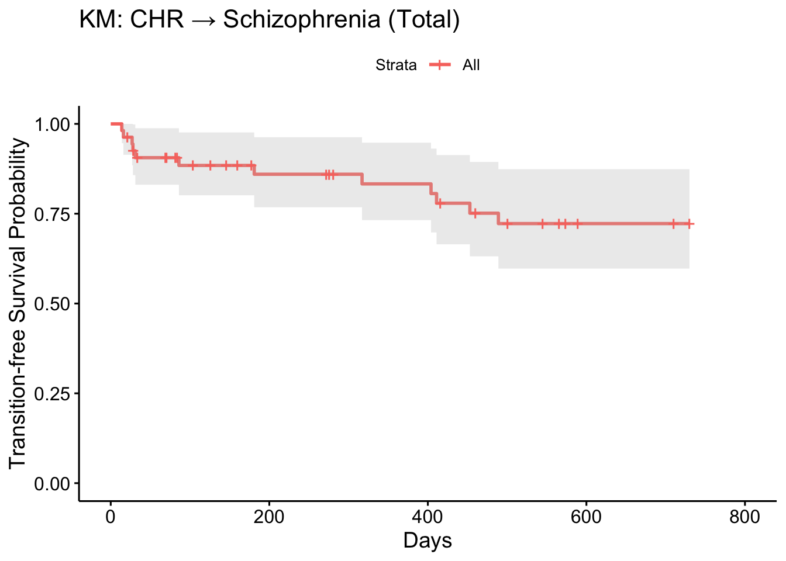
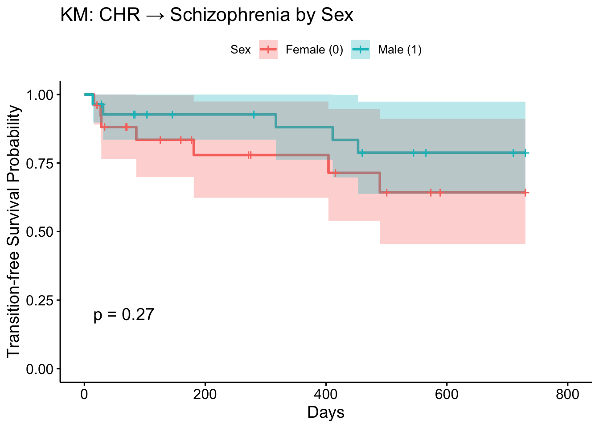
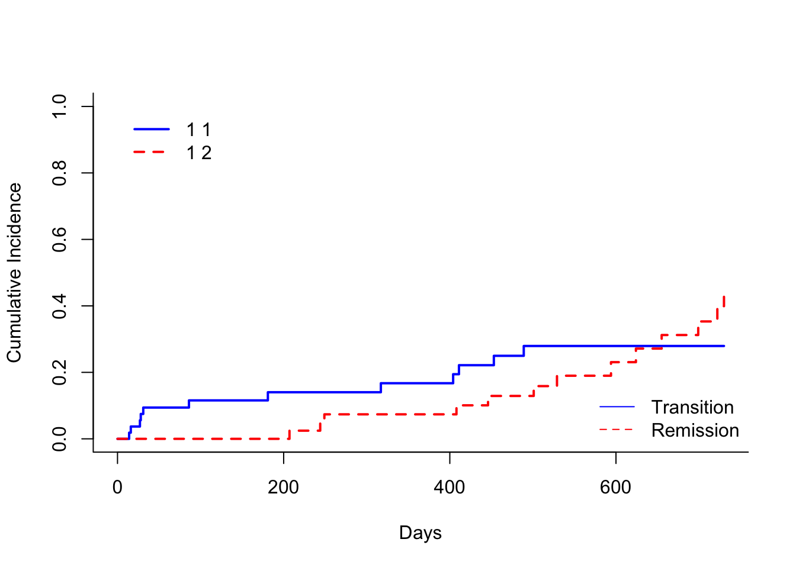
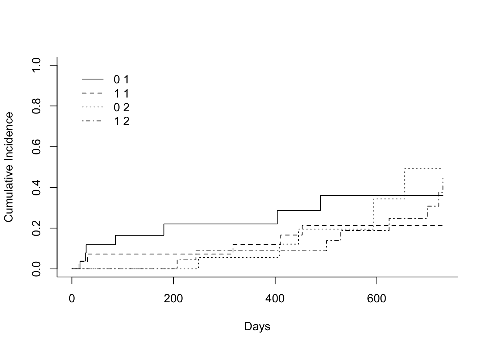
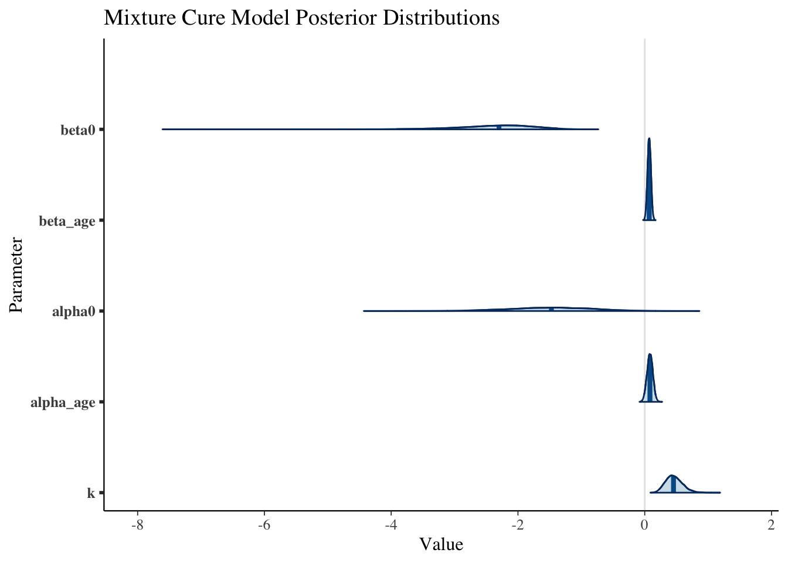

<!DOCTYPE html>
<html xmlns="http://www.w3.org/1999/xhtml" lang="en" xml:lang="en"><head>

<meta charset="utf-8">
<meta name="generator" content="quarto-1.6.42">

<meta name="viewport" content="width=device-width, initial-scale=1.0, user-scalable=yes">

<meta name="author" content="ido ji">

<title>Survival Analysis on Schizophrenia CHR</title>
<style>
code{white-space: pre-wrap;}
span.smallcaps{font-variant: small-caps;}
div.columns{display: flex; gap: min(4vw, 1.5em);}
div.column{flex: auto; overflow-x: auto;}
div.hanging-indent{margin-left: 1.5em; text-indent: -1.5em;}
ul.task-list{list-style: none;}
ul.task-list li input[type="checkbox"] {
  width: 0.8em;
  margin: 0 0.8em 0.2em -1em; /* quarto-specific, see https://github.com/quarto-dev/quarto-cli/issues/4556 */ 
  vertical-align: middle;
}
/* CSS for syntax highlighting */
pre > code.sourceCode { white-space: pre; position: relative; }
pre > code.sourceCode > span { line-height: 1.25; }
pre > code.sourceCode > span:empty { height: 1.2em; }
.sourceCode { overflow: visible; }
code.sourceCode > span { color: inherit; text-decoration: inherit; }
div.sourceCode { margin: 1em 0; }
pre.sourceCode { margin: 0; }
@media screen {
div.sourceCode { overflow: auto; }
}
@media print {
pre > code.sourceCode { white-space: pre-wrap; }
pre > code.sourceCode > span { display: inline-block; text-indent: -5em; padding-left: 5em; }
}
pre.numberSource code
  { counter-reset: source-line 0; }
pre.numberSource code > span
  { position: relative; left: -4em; counter-increment: source-line; }
pre.numberSource code > span > a:first-child::before
  { content: counter(source-line);
    position: relative; left: -1em; text-align: right; vertical-align: baseline;
    border: none; display: inline-block;
    -webkit-touch-callout: none; -webkit-user-select: none;
    -khtml-user-select: none; -moz-user-select: none;
    -ms-user-select: none; user-select: none;
    padding: 0 4px; width: 4em;
  }
pre.numberSource { margin-left: 3em;  padding-left: 4px; }
div.sourceCode
  {   }
@media screen {
pre > code.sourceCode > span > a:first-child::before { text-decoration: underline; }
}
</style>


<script src="Survival Analysis_files/libs/clipboard/clipboard.min.js"></script>
<script src="Survival Analysis_files/libs/quarto-html/quarto.js"></script>
<script src="Survival Analysis_files/libs/quarto-html/popper.min.js"></script>
<script src="Survival Analysis_files/libs/quarto-html/tippy.umd.min.js"></script>
<script src="Survival Analysis_files/libs/quarto-html/anchor.min.js"></script>
<link href="Survival Analysis_files/libs/quarto-html/tippy.css" rel="stylesheet">
<link href="Survival Analysis_files/libs/quarto-html/quarto-syntax-highlighting-2f5df379a58b258e96c21c0638c20c03.css" rel="stylesheet" id="quarto-text-highlighting-styles">
<script src="Survival Analysis_files/libs/bootstrap/bootstrap.min.js"></script>
<link href="Survival Analysis_files/libs/bootstrap/bootstrap-icons.css" rel="stylesheet">
<link href="Survival Analysis_files/libs/bootstrap/bootstrap-c0367b04c37547644fece4185067e4a7.min.css" rel="stylesheet" append-hash="true" id="quarto-bootstrap" data-mode="light">

  <script src="https://cdnjs.cloudflare.com/polyfill/v3/polyfill.min.js?features=es6"></script>
  <script src="https://cdn.jsdelivr.net/npm/mathjax@3/es5/tex-chtml-full.js" type="text/javascript"></script>

<script type="text/javascript">
const typesetMath = (el) => {
  if (window.MathJax) {
    // MathJax Typeset
    window.MathJax.typeset([el]);
  } else if (window.katex) {
    // KaTeX Render
    var mathElements = el.getElementsByClassName("math");
    var macros = [];
    for (var i = 0; i < mathElements.length; i++) {
      var texText = mathElements[i].firstChild;
      if (mathElements[i].tagName == "SPAN") {
        window.katex.render(texText.data, mathElements[i], {
          displayMode: mathElements[i].classList.contains('display'),
          throwOnError: false,
          macros: macros,
          fleqn: false
        });
      }
    }
  }
}
window.Quarto = {
  typesetMath
};
</script>

</head>

<body>

<div id="quarto-content" class="page-columns page-rows-contents page-layout-article">
<div id="quarto-margin-sidebar" class="sidebar margin-sidebar">
  <nav id="TOC" role="doc-toc" class="toc-active" data-toc-expanded="99">
    <h2 id="toc-title">Table of contents</h2>
   
  <ul>
  <li><a href="#패키지-설치-및-로딩" id="toc-패키지-설치-및-로딩" class="nav-link active" data-scroll-target="#패키지-설치-및-로딩">📦 패키지 설치 및 로딩</a></li>
  <li><a href="#데이터-준비" id="toc-데이터-준비" class="nav-link" data-scroll-target="#데이터-준비">📊 데이터 준비</a></li>
  <li><a href="#kaplanmeier-생존분석" id="toc-kaplanmeier-생존분석" class="nav-link" data-scroll-target="#kaplanmeier-생존분석">🟥 1. Kaplan–Meier 생존분석</a>
  <ul>
  <li><a href="#전체-그룹" id="toc-전체-그룹" class="nav-link" data-scroll-target="#전체-그룹">🟨 전체 그룹</a>
  <ul class="collapse">
  <li><a href="#카플란마이어-적합" id="toc-카플란마이어-적합" class="nav-link" data-scroll-target="#카플란마이어-적합">🟪 카플란–마이어 적합</a></li>
  <li><a href="#특정-시점730일-생존율" id="toc-특정-시점730일-생존율" class="nav-link" data-scroll-target="#특정-시점730일-생존율">🟪 특정 시점(730일) 생존율</a></li>
  <li><a href="#적합결과-요약-해석730일-시점-기준" id="toc-적합결과-요약-해석730일-시점-기준" class="nav-link" data-scroll-target="#적합결과-요약-해석730일-시점-기준">🟪 적합결과 요약 해석(730일 시점 기준)</a></li>
  <li><a href="#카플란-마이어-곡선-및-신뢰구간-시각화" id="toc-카플란-마이어-곡선-및-신뢰구간-시각화" class="nav-link" data-scroll-target="#카플란-마이어-곡선-및-신뢰구간-시각화">🟪 카플란-마이어 곡선 및 신뢰구간 시각화</a>
  <ul class="collapse">
  <li><a href="#그래프-해석" id="toc-그래프-해석" class="nav-link" data-scroll-target="#그래프-해석">📊 그래프 해석</a></li>
  </ul></li>
  <li><a href="#결론-요약" id="toc-결론-요약" class="nav-link" data-scroll-target="#결론-요약">🟪 결론 요약</a></li>
  </ul></li>
  <li><a href="#성별-그룹별-생존-분석-kaplanmeier-및-log-rank-검정" id="toc-성별-그룹별-생존-분석-kaplanmeier-및-log-rank-검정" class="nav-link" data-scroll-target="#성별-그룹별-생존-분석-kaplanmeier-및-log-rank-검정">🟨 성별 그룹별 생존 분석: Kaplan–Meier 및 Log-rank 검정</a>
  <ul class="collapse">
  <li><a href="#kaplanmeier-생존곡선-성별-그룹-비교" id="toc-kaplanmeier-생존곡선-성별-그룹-비교" class="nav-link" data-scroll-target="#kaplanmeier-생존곡선-성별-그룹-비교">🟪 Kaplan–Meier 생존곡선: 성별 그룹 비교</a></li>
  <li><a href="#일2년-시점-생존율-비교" id="toc-일2년-시점-생존율-비교" class="nav-link" data-scroll-target="#일2년-시점-생존율-비교">🟪 730일(2년) 시점 생존율 비교</a></li>
  <li><a href="#log-rank-검정-성별-간-생존곡선-차이-검정" id="toc-log-rank-검정-성별-간-생존곡선-차이-검정" class="nav-link" data-scroll-target="#log-rank-검정-성별-간-생존곡선-차이-검정">🟪 Log-rank 검정: 성별 간 생존곡선 차이 검정</a></li>
  <li><a href="#종합-요약" id="toc-종합-요약" class="nav-link" data-scroll-target="#종합-요약">🟪 종합 요약</a></li>
  </ul></li>
  </ul></li>
  <li><a href="#mixture-cure-model-ph" id="toc-mixture-cure-model-ph" class="nav-link" data-scroll-target="#mixture-cure-model-ph">🟥 2. Mixture Cure Model (PH)</a>
  <ul>
  <li><a href="#분석-개요" id="toc-분석-개요" class="nav-link" data-scroll-target="#분석-개요">🟨 분석 개요</a></li>
  <li><a href="#수학적-모델-구조" id="toc-수학적-모델-구조" class="nav-link" data-scroll-target="#수학적-모델-구조">🟨 수학적 모델 구조</a></li>
  <li><a href="#모델-추정-결과" id="toc-모델-추정-결과" class="nav-link" data-scroll-target="#모델-추정-결과">🟨 모델 추정 결과</a>
  <ul class="collapse">
  <li><a href="#cure-probability-model-완치-확률-모형" id="toc-cure-probability-model-완치-확률-모형" class="nav-link" data-scroll-target="#cure-probability-model-완치-확률-모형">🔹 Cure Probability Model (완치 확률 모형)</a></li>
  <li><a href="#failure-time-model-ph-모형" id="toc-failure-time-model-ph-모형" class="nav-link" data-scroll-target="#failure-time-model-ph-모형">🔹 Failure Time Model (PH 모형)</a></li>
  </ul></li>
  <li><a href="#해석-요약" id="toc-해석-요약" class="nav-link" data-scroll-target="#해석-요약">🟨 해석 요약</a></li>
  <li><a href="#결론" id="toc-결론" class="nav-link" data-scroll-target="#결론">🟨 결론</a></li>
  </ul></li>
  <li><a href="#competing-risks-transition-vs-remission" id="toc-competing-risks-transition-vs-remission" class="nav-link" data-scroll-target="#competing-risks-transition-vs-remission">🟥 3. Competing Risks (transition vs remission)</a>
  <ul>
  <li><a href="#이벤트-타입-및-시간-전처리" id="toc-이벤트-타입-및-시간-전처리" class="nav-link" data-scroll-target="#이벤트-타입-및-시간-전처리">🟨 이벤트 타입 및 시간 전처리</a></li>
  <li><a href="#전체-코호트-누적-발생-함수cif-추정-결과-해석" id="toc-전체-코호트-누적-발생-함수cif-추정-결과-해석" class="nav-link" data-scroll-target="#전체-코호트-누적-발생-함수cif-추정-결과-해석">🟨 전체 코호트 누적 발생 함수(CIF) 추정 결과 해석</a>
  <ul class="collapse">
  <li><a href="#추정치-및-분산-printfit_cr-결과" id="toc-추정치-및-분산-printfit_cr-결과" class="nav-link" data-scroll-target="#추정치-및-분산-printfit_cr-결과">🟪 추정치 및 분산 (<code>print(fit_cr)</code> 결과)</a></li>
  <li><a href="#그래프-해석-1" id="toc-그래프-해석-1" class="nav-link" data-scroll-target="#그래프-해석-1">🟪 그래프 해석</a></li>
  <li><a href="#종합-해석" id="toc-종합-해석" class="nav-link" data-scroll-target="#종합-해석">🟪 종합 해석</a></li>
  </ul></li>
  <li><a href="#그룹별-grays-test-성별에-따른-cif-차이-검정" id="toc-그룹별-grays-test-성별에-따른-cif-차이-검정" class="nav-link" data-scroll-target="#그룹별-grays-test-성별에-따른-cif-차이-검정">🟨 그룹별 Gray’s test : 성별에 따른 CIF 차이 검정</a>
  <ul class="collapse">
  <li><a href="#검정-결과" id="toc-검정-결과" class="nav-link" data-scroll-target="#검정-결과">🟪 검정 결과</a></li>
  <li><a href="#cif-추정치-200400600일" id="toc-cif-추정치-200400600일" class="nav-link" data-scroll-target="#cif-추정치-200400600일">🟪 CIF 추정치 (@ 200·400·600일)</a></li>
  <li><a href="#그래프-해석-2" id="toc-그래프-해석-2" class="nav-link" data-scroll-target="#그래프-해석-2">🟪 그래프 해석</a></li>
  <li><a href="#결론-요약-1" id="toc-결론-요약-1" class="nav-link" data-scroll-target="#결론-요약-1">🟪 결론 요약</a></li>
  </ul></li>
  <li><a href="#finegray-회귀분석-공변량-효과-평가" id="toc-finegray-회귀분석-공변량-효과-평가" class="nav-link" data-scroll-target="#finegray-회귀분석-공변량-효과-평가">🟨 Fine–Gray 회귀분석 : 공변량 효과 평가</a>
  <ul class="collapse">
  <li><a href="#추정계수-및-subdistribution-hazard-ratio-shr" id="toc-추정계수-및-subdistribution-hazard-ratio-shr" class="nav-link" data-scroll-target="#추정계수-및-subdistribution-hazard-ratio-shr">🟪 추정계수 및 Subdistribution Hazard Ratio (SHR)</a></li>
  <li><a href="#모델-적합도" id="toc-모델-적합도" class="nav-link" data-scroll-target="#모델-적합도">🟪 모델 적합도</a></li>
  <li><a href="#결론-및-다음-단계-제안" id="toc-결론-및-다음-단계-제안" class="nav-link" data-scroll-target="#결론-및-다음-단계-제안">🟪 결론 및 다음 단계 제안</a></li>
  </ul></li>
  </ul></li>
  <li><a href="#bayesian-생존분석" id="toc-bayesian-생존분석" class="nav-link" data-scroll-target="#bayesian-생존분석">🟥 5. Bayesian 생존분석</a>
  <ul>
  <li><a href="#exponentialcox-모델" id="toc-exponentialcox-모델" class="nav-link" data-scroll-target="#exponentialcox-모델">🟨 Exponential–Cox 모델</a>
  <ul class="collapse">
  <li><a href="#모형-적합-및-결과-확인" id="toc-모형-적합-및-결과-확인" class="nav-link" data-scroll-target="#모형-적합-및-결과-확인">🟪 모형 적합 및 결과 확인</a></li>
  <li><a href="#결론-1" id="toc-결론-1" class="nav-link" data-scroll-target="#결론-1">🟪 결론</a></li>
  </ul></li>
  <li><a href="#exponentialcox-나이-중앙정렬" id="toc-exponentialcox-나이-중앙정렬" class="nav-link" data-scroll-target="#exponentialcox-나이-중앙정렬">🟨 Exponential–Cox (나이 중앙정렬)</a>
  <ul class="collapse">
  <li><a href="#모형-적합-및-결과-확인-1" id="toc-모형-적합-및-결과-확인-1" class="nav-link" data-scroll-target="#모형-적합-및-결과-확인-1">🟪 모형 적합 및 결과 확인</a></li>
  <li><a href="#결론-2" id="toc-결론-2" class="nav-link" data-scroll-target="#결론-2">🟪 결론</a></li>
  </ul></li>
  <li><a href="#bayesian-mixture-cure-model-stan" id="toc-bayesian-mixture-cure-model-stan" class="nav-link" data-scroll-target="#bayesian-mixture-cure-model-stan">🟨 5. Bayesian Mixture Cure Model (Stan)</a>
  <ul class="collapse">
  <li><a href="#모형-적합" id="toc-모형-적합" class="nav-link" data-scroll-target="#모형-적합">🟪 모형 적합</a></li>
  <li><a href="#파라미터-요약-해석" id="toc-파라미터-요약-해석" class="nav-link" data-scroll-target="#파라미터-요약-해석">🟪 파라미터 요약 해석</a>
  <ul class="collapse">
  <li><a href="#요약-해석" id="toc-요약-해석" class="nav-link" data-scroll-target="#요약-해석">요약 해석</a></li>
  <li><a href="#수렴-진단-결과" id="toc-수렴-진단-결과" class="nav-link" data-scroll-target="#수렴-진단-결과">수렴 진단 결과</a></li>
  </ul></li>
  <li><a href="#사후분포-시각화" id="toc-사후분포-시각화" class="nav-link" data-scroll-target="#사후분포-시각화">🟪 사후분포 시각화</a></li>
  </ul></li>
  </ul></li>
  </ul>
</nav>
</div>
<main class="content" id="quarto-document-content">

<header id="title-block-header" class="quarto-title-block default">
<div class="quarto-title">
<h1 class="title">Survival Analysis on Schizophrenia CHR</h1>
</div>


<div class="quarto-title-meta">

    <div>
    <div class="quarto-title-meta-heading">Author</div>
    <div class="quarto-title-meta-contents">
             <p>ido ji </p>
          </div>
  </div>
    
  
    
  </div>
  


</header>


<section id="패키지-설치-및-로딩" class="level1">
<h1>📦 패키지 설치 및 로딩</h1>
<div class="cell">
<div class="sourceCode cell-code" id="cb1"><pre class="sourceCode r code-with-copy"><code class="sourceCode r"><span id="cb1-1"><a href="#cb1-1" aria-hidden="true" tabindex="-1"></a><span class="fu">library</span>(survival)</span>
<span id="cb1-2"><a href="#cb1-2" aria-hidden="true" tabindex="-1"></a><span class="fu">library</span>(survminer)</span>
<span id="cb1-3"><a href="#cb1-3" aria-hidden="true" tabindex="-1"></a><span class="fu">library</span>(cmprsk)</span>
<span id="cb1-4"><a href="#cb1-4" aria-hidden="true" tabindex="-1"></a><span class="fu">library</span>(smcure)</span>
<span id="cb1-5"><a href="#cb1-5" aria-hidden="true" tabindex="-1"></a><span class="fu">library</span>(rstanarm)</span>
<span id="cb1-6"><a href="#cb1-6" aria-hidden="true" tabindex="-1"></a><span class="fu">library</span>(bayesSurv)</span>
<span id="cb1-7"><a href="#cb1-7" aria-hidden="true" tabindex="-1"></a>filter <span class="ot">&lt;-</span> dplyr<span class="sc">::</span>filter</span>
<span id="cb1-8"><a href="#cb1-8" aria-hidden="true" tabindex="-1"></a>select <span class="ot">&lt;-</span> dplyr<span class="sc">::</span>select</span>
<span id="cb1-9"><a href="#cb1-9" aria-hidden="true" tabindex="-1"></a>path_save <span class="ot">=</span> <span class="st">"/Users/Ido/Documents/GitHub/Obsidian/☔️Papers_Writing(논문 쓰기)/✅Currently working/㊙️조현병 생존분석/데이터 분석/attachments"</span></span></code><button title="Copy to Clipboard" class="code-copy-button"><i class="bi"></i></button></pre></div>
</div>
</section>
<section id="데이터-준비" class="level1">
<h1>📊 데이터 준비</h1>
<div class="cell">
<div class="sourceCode cell-code" id="cb2"><pre class="sourceCode r code-with-copy"><code class="sourceCode r"><span id="cb2-1"><a href="#cb2-1" aria-hidden="true" tabindex="-1"></a>path_data <span class="ot">&lt;-</span> <span class="st">"/Users/Ido/Documents/GitHub/Obsidian/☔️Papers_Writing(논문 쓰기)/✅Currently working/㊙️조현병 생존분석/데이터 분석/attachments/survival.csv"</span></span>
<span id="cb2-2"><a href="#cb2-2" aria-hidden="true" tabindex="-1"></a>df <span class="ot">&lt;-</span> <span class="fu">read.csv</span>(path_data)</span></code><button title="Copy to Clipboard" class="code-copy-button"><i class="bi"></i></button></pre></div>
</div>
</section>
<section id="kaplanmeier-생존분석" class="level1">
<h1>🟥 1. Kaplan–Meier 생존분석</h1>
<section id="전체-그룹" class="level2">
<h2 class="anchored" data-anchor-id="전체-그룹">🟨 전체 그룹</h2>
<section id="카플란마이어-적합" class="level3">
<h3 class="anchored" data-anchor-id="카플란마이어-적합">🟪 카플란–마이어 적합</h3>
<div class="cell">
<div class="sourceCode cell-code" id="cb3"><pre class="sourceCode r code-with-copy"><code class="sourceCode r"><span id="cb3-1"><a href="#cb3-1" aria-hidden="true" tabindex="-1"></a>fit_km1 <span class="ot">&lt;-</span> <span class="fu">survfit</span>(<span class="fu">Surv</span>(dur_transition, transition) <span class="sc">~</span> <span class="dv">1</span>, <span class="at">data =</span> df)</span></code><button title="Copy to Clipboard" class="code-copy-button"><i class="bi"></i></button></pre></div>
</div>
</section>
<section id="특정-시점730일-생존율" class="level3">
<h3 class="anchored" data-anchor-id="특정-시점730일-생존율">🟪 특정 시점(730일) 생존율</h3>
<div class="cell">
<div class="sourceCode cell-code" id="cb4"><pre class="sourceCode r code-with-copy"><code class="sourceCode r"><span id="cb4-1"><a href="#cb4-1" aria-hidden="true" tabindex="-1"></a><span class="fu">summary</span>(fit_km1, <span class="at">times =</span> <span class="dv">730</span>)</span></code><button title="Copy to Clipboard" class="code-copy-button"><i class="bi"></i></button></pre></div>
<div class="cell-output cell-output-stdout">
<pre><code>Call: survfit(formula = Surv(dur_transition, transition) ~ 1, data = df)

 time n.risk n.event survival std.err lower 95% CI upper 95% CI
  730     19      12    0.722  0.0701        0.597        0.874</code></pre>
</div>
</div>
</section>
<section id="적합결과-요약-해석730일-시점-기준" class="level3">
<h3 class="anchored" data-anchor-id="적합결과-요약-해석730일-시점-기준">🟪 적합결과 요약 해석(730일 시점 기준)</h3>
<table class="caption-top table">
<colgroup>
<col style="width: 21%">
<col style="width: 78%">
</colgroup>
<thead>
<tr class="header">
<th>항목</th>
<th>의미</th>
</tr>
</thead>
<tbody>
<tr class="odd">
<td><code>time</code></td>
<td>평가 시점 (730일 = 2년)</td>
</tr>
<tr class="even">
<td><code>n.risk</code></td>
<td>해당 시점까지 생존(전이 안 됨) 상태로 관찰 중인 대상 수</td>
</tr>
<tr class="odd">
<td><code>n.event</code></td>
<td>사건(전이) 발생 수</td>
</tr>
<tr class="even">
<td><code>survival</code></td>
<td>추정 생존 확률 → 약 <strong>72.2%</strong></td>
</tr>
<tr class="odd">
<td><code>std.err</code></td>
<td>생존률의 표준 오차</td>
</tr>
<tr class="even">
<td><code>lower 95% CI</code></td>
<td>생존률 95% 신뢰구간 하한 = <strong>59.7%</strong></td>
</tr>
<tr class="odd">
<td><code>upper 95% CI</code></td>
<td>생존률 95% 신뢰구간 상한 = <strong>87.4%</strong></td>
</tr>
</tbody>
</table>
<blockquote class="blockquote">
<p><strong>CHR 상태인 개인이 조현병으로 전이되지 않고 2년(730일)간 유지될 확률은 약 72.2%이며, 95% 신뢰구간은 59.7% ~ 87.4%이다.</strong></p>
</blockquote>
</section>
<section id="카플란-마이어-곡선-및-신뢰구간-시각화" class="level3">
<h3 class="anchored" data-anchor-id="카플란-마이어-곡선-및-신뢰구간-시각화">🟪 카플란-마이어 곡선 및 신뢰구간 시각화</h3>
<div class="cell">
<div class="sourceCode cell-code" id="cb6"><pre class="sourceCode r code-with-copy"><code class="sourceCode r"><span id="cb6-1"><a href="#cb6-1" aria-hidden="true" tabindex="-1"></a><span class="fu">ggsurvplot</span>(fit_km1,</span>
<span id="cb6-2"><a href="#cb6-2" aria-hidden="true" tabindex="-1"></a></span>
<span id="cb6-3"><a href="#cb6-3" aria-hidden="true" tabindex="-1"></a><span class="at">conf.int =</span> <span class="cn">TRUE</span>,</span>
<span id="cb6-4"><a href="#cb6-4" aria-hidden="true" tabindex="-1"></a></span>
<span id="cb6-5"><a href="#cb6-5" aria-hidden="true" tabindex="-1"></a><span class="at">xlab =</span> <span class="st">"Days"</span>,</span>
<span id="cb6-6"><a href="#cb6-6" aria-hidden="true" tabindex="-1"></a></span>
<span id="cb6-7"><a href="#cb6-7" aria-hidden="true" tabindex="-1"></a><span class="at">ylab =</span> <span class="st">"Transition-free Survival Probability"</span>,</span>
<span id="cb6-8"><a href="#cb6-8" aria-hidden="true" tabindex="-1"></a></span>
<span id="cb6-9"><a href="#cb6-9" aria-hidden="true" tabindex="-1"></a><span class="at">title =</span> <span class="st">"KM: CHR → Schizophrenia (Total)"</span>)</span></code><button title="Copy to Clipboard" class="code-copy-button"><i class="bi"></i></button></pre></div>
<div class="cell-output-display">
<div>
<figure class="figure">
<p></p>
</figure>
</div>
</div>
</div>
<section id="그래프-해석" class="level4">
<h4 class="anchored" data-anchor-id="그래프-해석">📊 그래프 해석</h4>
<ul>
<li><strong>붉은 실선</strong>: Kaplan-Meier 추정 생존 곡선 ( (t) )</li>
<li><strong>회색 음영</strong>: 95% 신뢰구간</li>
<li><code>+</code> 표시: 검열된 사례 (전이 없이 관찰 종료)</li>
<li>곡선이 평평해지는 구간은 사건이 더 이상 발생하지 않았음을 나타냄</li>
<li>시각적으로도 730일 시점에서 약 0.72 수준의 생존 확률을 확인 가능</li>
</ul>
</section>
</section>
<section id="결론-요약" class="level3">
<h3 class="anchored" data-anchor-id="결론-요약">🟪 결론 요약</h3>
<table class="caption-top table">
<thead>
<tr class="header">
<th>항목</th>
<th>값</th>
</tr>
</thead>
<tbody>
<tr class="odd">
<td>생존 확률</td>
<td><strong>72.2%</strong></td>
</tr>
<tr class="even">
<td>사건 발생률</td>
<td><strong>27.8%</strong></td>
</tr>
<tr class="odd">
<td>신뢰구간 (95%)</td>
<td><strong>[59.7%, 87.4%]</strong></td>
</tr>
<tr class="even">
<td>해석</td>
<td>CHR 상태의 약 72%는 2년 내 조현병으로 전이되지 않음</td>
</tr>
</tbody>
</table>
</section>
</section>
<section id="성별-그룹별-생존-분석-kaplanmeier-및-log-rank-검정" class="level2">
<h2 class="anchored" data-anchor-id="성별-그룹별-생존-분석-kaplanmeier-및-log-rank-검정">🟨 성별 그룹별 생존 분석: Kaplan–Meier 및 Log-rank 검정</h2>
<section id="kaplanmeier-생존곡선-성별-그룹-비교" class="level3">
<h3 class="anchored" data-anchor-id="kaplanmeier-생존곡선-성별-그룹-비교">🟪 Kaplan–Meier 생존곡선: 성별 그룹 비교</h3>
<div class="cell">
<div class="sourceCode cell-code" id="cb7"><pre class="sourceCode r code-with-copy"><code class="sourceCode r"><span id="cb7-1"><a href="#cb7-1" aria-hidden="true" tabindex="-1"></a>fit_km2 <span class="ot">&lt;-</span> <span class="fu">survfit</span>(<span class="fu">Surv</span>(dur_transition, transition) <span class="sc">~</span> sex, <span class="at">data =</span> df)</span>
<span id="cb7-2"><a href="#cb7-2" aria-hidden="true" tabindex="-1"></a></span>
<span id="cb7-3"><a href="#cb7-3" aria-hidden="true" tabindex="-1"></a><span class="fu">ggsurvplot</span>(</span>
<span id="cb7-4"><a href="#cb7-4" aria-hidden="true" tabindex="-1"></a>  fit_km2,</span>
<span id="cb7-5"><a href="#cb7-5" aria-hidden="true" tabindex="-1"></a>  <span class="at">conf.int =</span> <span class="cn">TRUE</span>,</span>
<span id="cb7-6"><a href="#cb7-6" aria-hidden="true" tabindex="-1"></a>  <span class="at">pval =</span> <span class="cn">TRUE</span>,</span>
<span id="cb7-7"><a href="#cb7-7" aria-hidden="true" tabindex="-1"></a>  <span class="at">xlab =</span> <span class="st">"Days"</span>,</span>
<span id="cb7-8"><a href="#cb7-8" aria-hidden="true" tabindex="-1"></a>  <span class="at">ylab =</span> <span class="st">"Transition-free Survival Probability"</span>,</span>
<span id="cb7-9"><a href="#cb7-9" aria-hidden="true" tabindex="-1"></a>  <span class="at">title =</span> <span class="st">"KM: CHR → Schizophrenia by Sex"</span>,</span>
<span id="cb7-10"><a href="#cb7-10" aria-hidden="true" tabindex="-1"></a>  <span class="at">legend.title =</span> <span class="st">"Sex"</span>,</span>
<span id="cb7-11"><a href="#cb7-11" aria-hidden="true" tabindex="-1"></a>  <span class="at">legend.labs =</span> <span class="fu">c</span>(<span class="st">"Female (0)"</span>, <span class="st">"Male (1)"</span>)</span>
<span id="cb7-12"><a href="#cb7-12" aria-hidden="true" tabindex="-1"></a>)</span></code><button title="Copy to Clipboard" class="code-copy-button"><i class="bi"></i></button></pre></div>
<div class="cell-output-display">
<div>
<figure class="figure">
<p></p>
</figure>
</div>
</div>
</div>
<blockquote class="blockquote">
<p>Kaplan–Meier 생존곡선은 성별(sex)에 따라 <strong>전이 없는 생존률(Survival Probability)</strong>을 시각적으로 비교. 실선은 생존 추정 곡선, 음영은 95% 신뢰구간을 의미하며, <code>+</code> 기호는 중도검열된 관측치를 나타냄.</p>
</blockquote>
<hr>
</section>
<section id="일2년-시점-생존율-비교" class="level3">
<h3 class="anchored" data-anchor-id="일2년-시점-생존율-비교">🟪 730일(2년) 시점 생존율 비교</h3>
<div class="cell">
<div class="sourceCode cell-code" id="cb8"><pre class="sourceCode r code-with-copy"><code class="sourceCode r"><span id="cb8-1"><a href="#cb8-1" aria-hidden="true" tabindex="-1"></a><span class="fu">summary</span>(fit_km2, <span class="at">times =</span> <span class="dv">730</span>)</span></code><button title="Copy to Clipboard" class="code-copy-button"><i class="bi"></i></button></pre></div>
<div class="cell-output cell-output-stdout">
<pre><code>Call: survfit(formula = Surv(dur_transition, transition) ~ sex, data = df)

                sex=0 
        time       n.risk      n.event     survival      std.err lower 95% CI 
     730.000        6.000        7.000        0.643        0.114        0.454 
upper 95% CI 
       0.911 

                sex=1 
        time       n.risk      n.event     survival      std.err lower 95% CI 
    730.0000      13.0000       5.0000       0.7881       0.0852       0.6376 
upper 95% CI 
      0.9741 </code></pre>
</div>
</div>
<table class="caption-top table">
<colgroup>
<col style="width: 16%">
<col style="width: 16%">
<col style="width: 16%">
<col style="width: 16%">
<col style="width: 16%">
<col style="width: 16%">
</colgroup>
<thead>
<tr class="header">
<th>성별 (<code>sex</code>)</th>
<th>생존률 ( <span class="math inline">\(\hat{S}(730)\)</span> )</th>
<th>표준오차 (SE)</th>
<th>95% 신뢰구간</th>
<th>n.risk</th>
<th>n.event</th>
</tr>
</thead>
<tbody>
<tr class="odd">
<td>Female (0)</td>
<td>64.3%</td>
<td>0.114</td>
<td>[45.4%, 91.1%]</td>
<td>6</td>
<td>7</td>
</tr>
<tr class="even">
<td>Male (1)</td>
<td>78.8%</td>
<td>0.0852</td>
<td>[63.8%, 97.4%]</td>
<td>13</td>
<td>5</td>
</tr>
</tbody>
</table>
<blockquote class="blockquote">
<p><strong>해석</strong>: 2년 시점에서 여성은 약 64.3%, 남성은 약 78.8%가 전이 없이 생존. 남성이 더 높은 생존률을 보였으나, 신뢰구간이 넓어 통계적으로 유의한 차이인지 추가 분석이 필요.</p>
</blockquote>
<hr>
</section>
<section id="log-rank-검정-성별-간-생존곡선-차이-검정" class="level3">
<h3 class="anchored" data-anchor-id="log-rank-검정-성별-간-생존곡선-차이-검정">🟪 Log-rank 검정: 성별 간 생존곡선 차이 검정</h3>
<div class="cell">
<div class="sourceCode cell-code" id="cb10"><pre class="sourceCode r code-with-copy"><code class="sourceCode r"><span id="cb10-1"><a href="#cb10-1" aria-hidden="true" tabindex="-1"></a>fit_logrank <span class="ot">&lt;-</span> <span class="fu">survdiff</span>(<span class="fu">Surv</span>(dur_transition, transition) <span class="sc">~</span> sex, <span class="at">data =</span> df)</span>
<span id="cb10-2"><a href="#cb10-2" aria-hidden="true" tabindex="-1"></a>chisq <span class="ot">&lt;-</span> fit_logrank<span class="sc">$</span>chisq</span>
<span id="cb10-3"><a href="#cb10-3" aria-hidden="true" tabindex="-1"></a>dfree <span class="ot">&lt;-</span> <span class="fu">length</span>(fit_logrank<span class="sc">$</span>n) <span class="sc">-</span> <span class="dv">1</span></span>
<span id="cb10-4"><a href="#cb10-4" aria-hidden="true" tabindex="-1"></a>p_val <span class="ot">&lt;-</span> <span class="dv">1</span> <span class="sc">-</span> <span class="fu">pchisq</span>(chisq, dfree)</span>
<span id="cb10-5"><a href="#cb10-5" aria-hidden="true" tabindex="-1"></a>fit_logrank</span></code><button title="Copy to Clipboard" class="code-copy-button"><i class="bi"></i></button></pre></div>
<div class="cell-output cell-output-stdout">
<pre><code>Call:
survdiff(formula = Surv(dur_transition, transition) ~ sex, data = df)

       N Observed Expected (O-E)^2/E (O-E)^2/V
sex=0 26        7      5.1     0.707      1.24
sex=1 28        5      6.9     0.523      1.24

 Chisq= 1.2  on 1 degrees of freedom, p= 0.3 </code></pre>
</div>
</div>
<table class="caption-top table">
<thead>
<tr class="header">
<th>그룹</th>
<th>N</th>
<th>Observed</th>
<th>Expected</th>
<th>(O−E)² / E</th>
<th>(O−E)² / V</th>
</tr>
</thead>
<tbody>
<tr class="odd">
<td>Female (0)</td>
<td>26</td>
<td>7</td>
<td>5.1</td>
<td>0.707</td>
<td>1.24</td>
</tr>
<tr class="even">
<td>Male (1)</td>
<td>28</td>
<td>5</td>
<td>6.9</td>
<td>0.523</td>
<td>1.24</td>
</tr>
</tbody>
</table>
<ul>
<li><strong>카이제곱 통계량</strong>: 1.2<br>
</li>
<li><strong>자유도</strong>: 1<br>
</li>
<li><strong>p-value</strong>: 0.265</li>
</ul>
<blockquote class="blockquote">
<p><strong>결론</strong>: 성별에 따른 생존곡선 차이는 <strong>통계적으로 유의하지 않음</strong> (p = 0.265 &gt; 0.05). 따라서 CHR 환자의 조현병 전이 생존시간은 성별 간 유의미한 차이를 보이지 않음.</p>
</blockquote>
<hr>
</section>
<section id="종합-요약" class="level3">
<h3 class="anchored" data-anchor-id="종합-요약">🟪 종합 요약</h3>
<table class="caption-top table">
<thead>
<tr class="header">
<th>항목</th>
<th>결과</th>
</tr>
</thead>
<tbody>
<tr class="odd">
<td>분석 기법</td>
<td>Kaplan-Meier + Log-rank 검정</td>
</tr>
<tr class="even">
<td>비교 변수</td>
<td>성별 (<code>sex</code>)</td>
</tr>
<tr class="odd">
<td>생존률 차이</td>
<td>여성 64.3% vs 남성 78.8%</td>
</tr>
<tr class="even">
<td>통계적 유의성</td>
<td>p = 0.265 (유의하지 않음)</td>
</tr>
</tbody>
</table>
<blockquote class="blockquote">
<p><em>Kaplan–Meier 생존곡선 및 log-rank 검정 결과, 성별에 따른 CHR 환자의 조현병 전이 생존률은 시각적으로 차이를 보였으나, 통계적으로는 유의하지 않았다 (χ² = 1.2, df = 1, p = 0.265).</em></p>
</blockquote>
</section>
</section>
</section>
<section id="mixture-cure-model-ph" class="level1">
<h1>🟥 2. Mixture Cure Model (PH)</h1>
<div class="cell">
<div class="sourceCode cell-code" id="cb12"><pre class="sourceCode r code-with-copy"><code class="sourceCode r"><span id="cb12-1"><a href="#cb12-1" aria-hidden="true" tabindex="-1"></a><span class="co"># fit_cure_ph &lt;- smcure(Surv(dur_transition, transition) ~ age, </span></span>
<span id="cb12-2"><a href="#cb12-2" aria-hidden="true" tabindex="-1"></a><span class="co">#                       cureform = ~ age,</span></span>
<span id="cb12-3"><a href="#cb12-3" aria-hidden="true" tabindex="-1"></a><span class="co">#                       model = "ph", data = df)</span></span>
<span id="cb12-4"><a href="#cb12-4" aria-hidden="true" tabindex="-1"></a></span>
<span id="cb12-5"><a href="#cb12-5" aria-hidden="true" tabindex="-1"></a><span class="co"># save(fit_cure_ph, file = file.path(path_save, "fit_cure_ph.RData"))</span></span>
<span id="cb12-6"><a href="#cb12-6" aria-hidden="true" tabindex="-1"></a><span class="fu">load</span>(<span class="fu">file.path</span>(path_save, <span class="st">"fit_cure_ph.RData"</span>))</span>
<span id="cb12-7"><a href="#cb12-7" aria-hidden="true" tabindex="-1"></a></span>
<span id="cb12-8"><a href="#cb12-8" aria-hidden="true" tabindex="-1"></a><span class="fu">printsmcure</span>(fit_cure_ph)</span></code><button title="Copy to Clipboard" class="code-copy-button"><i class="bi"></i></button></pre></div>
<div class="cell-output cell-output-stdout">
<pre><code>Call:
smcure(formula = Surv(dur_transition, transition) ~ age, cureform = ~age, 
    data = df, model = "ph")

Cure probability model:
               Estimate  Std.Error   Z value  Pr(&gt;|Z|)
(Intercept) -3.12854012 1.90901154 -1.638827 0.1012492
age          0.09287625 0.08143941  1.140434 0.2541057


Failure time distribution model:
      Estimate Std.Error     Z value Pr(&gt;|Z|)
age -0.1238364  1.488564 -0.08319182 0.933699</code></pre>
</div>
</div>
<section id="분석-개요" class="level3">
<h3 class="anchored" data-anchor-id="분석-개요">🟨 분석 개요</h3>
<p><code>smcure()</code> 함수를 통해 <strong>PH 기반 Mixture Cure Model</strong>을 적합.</p>
<p>해당 모델은 <strong>일부 피험자가 사건(event)을 영원히 겪지 않을 수 있음</strong>을 반영하여 모집단을 다음 두 그룹으로 분리:</p>
<ul>
<li><strong>Cured (완치자)</strong>: 사건 발생 가능성 없음</li>
<li><strong>Uncured (미완치자)</strong>: 사건 발생 가능</li>
</ul>
<hr>
</section>
<section id="수학적-모델-구조" class="level3">
<h3 class="anchored" data-anchor-id="수학적-모델-구조">🟨 수학적 모델 구조</h3>
<p>전체 생존함수의 구성:</p>
<p>\[ S(t Z_i, X_i) = (Z_i) + (1 - (Z_i)) S_u(t X_i) \]</p>
<ul>
<li>\((Z_i)\) : 치유 확률 (로지스틱 회귀)</li>
<li>\(S_u(t X_i)\): 치유되지 않은 그룹의 생존함수 (Cox PH 기반)</li>
</ul>
<hr>
</section>
<section id="모델-추정-결과" class="level3">
<h3 class="anchored" data-anchor-id="모델-추정-결과">🟨 모델 추정 결과</h3>
<section id="cure-probability-model-완치-확률-모형" class="level4">
<h4 class="anchored" data-anchor-id="cure-probability-model-완치-확률-모형">🔹 Cure Probability Model (완치 확률 모형)</h4>
<table class="caption-top table">
<thead>
<tr class="header">
<th>계수</th>
<th>추정값</th>
<th>표준오차</th>
<th>z 값</th>
<th>p 값</th>
</tr>
</thead>
<tbody>
<tr class="odd">
<td>Intercept</td>
<td>–3.1285</td>
<td>1.9090</td>
<td>–1.639</td>
<td>0.1012</td>
</tr>
<tr class="even">
<td>age</td>
<td>0.0929</td>
<td>0.0814</td>
<td>1.140</td>
<td>0.2541</td>
</tr>
</tbody>
</table>
<blockquote class="blockquote">
<p>나이가 많을수록 완치 확률이 증가하는 경향을 보이나 <strong>p-값이 유의수준 0.05를 초과</strong>하여 통계적으로 유의하지 않음</p>
</blockquote>
</section>
<section id="failure-time-model-ph-모형" class="level4">
<h4 class="anchored" data-anchor-id="failure-time-model-ph-모형">🔹 Failure Time Model (PH 모형)</h4>
<table class="caption-top table">
<thead>
<tr class="header">
<th>계수</th>
<th>추정값</th>
<th>표준오차</th>
<th>z 값</th>
<th>p 값</th>
</tr>
</thead>
<tbody>
<tr class="odd">
<td>age</td>
<td>–0.1238</td>
<td>1.4886</td>
<td>–0.083</td>
<td>0.9337</td>
</tr>
</tbody>
</table>
<blockquote class="blockquote">
<p>나이가 많을수록 사건 발생 위험이 감소하는 경향이나, <strong>p-값이 매우 크며 유의하지 않음</strong></p>
</blockquote>
<hr>
</section>
</section>
<section id="해석-요약" class="level3">
<h3 class="anchored" data-anchor-id="해석-요약">🟨 해석 요약</h3>
<ul>
<li><strong>완치 확률</strong>: 나이의 계수는 양수 → 나이가 많을수록 완치될 가능성이 높아지는 경향. 그러나 통계적으로 유의하지 않음</li>
<li><strong>사건 발생 시간</strong>: 나이의 계수는 음수 → 나이가 많을수록 전이가 느려질 가능성. 마찬가지로 유의하지 않음</li>
<li><strong>전반적 결론</strong>: 본 데이터에서는 나이가 완치 여부나 사건 발생 시간에 <strong>유의한 영향을 주지 않음</strong></li>
</ul>
<hr>
</section>
<section id="결론" class="level3">
<h3 class="anchored" data-anchor-id="결론">🟨 결론</h3>
<table class="caption-top table">
<colgroup>
<col style="width: 23%">
<col style="width: 25%">
<col style="width: 23%">
<col style="width: 27%">
</colgroup>
<thead>
<tr class="header">
<th>구성 요소</th>
<th>나이(age)의 효과</th>
<th>유의성 (p-value)</th>
<th>해석 요약</th>
</tr>
</thead>
<tbody>
<tr class="odd">
<td>완치 확률</td>
<td>증가시키는 경향 (양의 계수)</td>
<td>0.2541</td>
<td>유의하지 않음</td>
</tr>
<tr class="even">
<td>생존시간 (전이 시간)</td>
<td>감소시키는 경향 (음의 계수)</td>
<td>0.9337</td>
<td>유의하지 않음</td>
</tr>
</tbody>
</table>
<blockquote class="blockquote">
<p>현재 모델에서는 <strong>나이가 중요한 설명변수가 아님</strong>을 시사. 다른 공변량 추가, 혹은 모델 재설계 필요</p>
</blockquote>
<hr>
</section>
</section>
<section id="competing-risks-transition-vs-remission" class="level1">
<h1>🟥 3. Competing Risks (transition vs remission)</h1>
<section id="이벤트-타입-및-시간-전처리" class="level2">
<h2 class="anchored" data-anchor-id="이벤트-타입-및-시간-전처리">🟨 이벤트 타입 및 시간 전처리</h2>
<div class="cell">
<div class="sourceCode cell-code" id="cb14"><pre class="sourceCode r code-with-copy"><code class="sourceCode r"><span id="cb14-1"><a href="#cb14-1" aria-hidden="true" tabindex="-1"></a>df<span class="sc">$</span>event_type <span class="ot">&lt;-</span> <span class="fu">ifelse</span>(df<span class="sc">$</span>transition <span class="sc">==</span> <span class="dv">1</span>, <span class="dv">1</span>, <span class="fu">ifelse</span>(df<span class="sc">$</span>remission <span class="sc">==</span> <span class="dv">1</span>, <span class="dv">2</span>, <span class="dv">0</span>))</span>
<span id="cb14-2"><a href="#cb14-2" aria-hidden="true" tabindex="-1"></a></span>
<span id="cb14-3"><a href="#cb14-3" aria-hidden="true" tabindex="-1"></a>df<span class="sc">$</span>time_to_event <span class="ot">&lt;-</span> <span class="fu">pmin</span>(df<span class="sc">$</span>dur_transition, df<span class="sc">$</span>dur_remission, <span class="at">na.rm =</span> <span class="cn">TRUE</span>)</span></code><button title="Copy to Clipboard" class="code-copy-button"><i class="bi"></i></button></pre></div>
</div>
</section>
<section id="전체-코호트-누적-발생-함수cif-추정-결과-해석" class="level2">
<h2 class="anchored" data-anchor-id="전체-코호트-누적-발생-함수cif-추정-결과-해석">🟨 전체 코호트 누적 발생 함수(CIF) 추정 결과 해석</h2>
<div class="cell">
<div class="sourceCode cell-code" id="cb15"><pre class="sourceCode r code-with-copy"><code class="sourceCode r"><span id="cb15-1"><a href="#cb15-1" aria-hidden="true" tabindex="-1"></a>fit_cr <span class="ot">&lt;-</span> <span class="fu">cuminc</span>(<span class="at">ftime =</span> df<span class="sc">$</span>time_to_event, <span class="at">fstatus =</span> df<span class="sc">$</span>event_type)</span>
<span id="cb15-2"><a href="#cb15-2" aria-hidden="true" tabindex="-1"></a></span>
<span id="cb15-3"><a href="#cb15-3" aria-hidden="true" tabindex="-1"></a><span class="co"># 결과 출력</span></span>
<span id="cb15-4"><a href="#cb15-4" aria-hidden="true" tabindex="-1"></a><span class="fu">print</span>(fit_cr)</span></code><button title="Copy to Clipboard" class="code-copy-button"><i class="bi"></i></button></pre></div>
<div class="cell-output cell-output-stdout">
<pre><code>Estimates and Variances:
$est
          200        400       600
1 1 0.1402103 0.16731701 0.2793472
1 2 0.0000000 0.07369626 0.2306753

$var
            200         400         600
1 1 0.002518007 0.003098538 0.005160333
1 2 0.000000000 0.001723953 0.005632103</code></pre>
</div>
</div>
<section id="추정치-및-분산-printfit_cr-결과" class="level3">
<h3 class="anchored" data-anchor-id="추정치-및-분산-printfit_cr-결과">🟪 추정치 및 분산 (<code>print(fit_cr)</code> 결과)</h3>
<table class="caption-top table">
<colgroup>
<col style="width: 16%">
<col style="width: 25%">
<col style="width: 17%">
<col style="width: 23%">
<col style="width: 17%">
</colgroup>
<thead>
<tr class="header">
<th>시간 (일)</th>
<th>CIF(Transition)</th>
<th>분산 (var)</th>
<th>CIF(Remission)</th>
<th>분산 (var)</th>
</tr>
</thead>
<tbody>
<tr class="odd">
<td><strong>200</strong></td>
<td>0.1402</td>
<td>0.002518</td>
<td>0.0000</td>
<td>0.000000</td>
</tr>
<tr class="even">
<td><strong>400</strong></td>
<td>0.1673</td>
<td>0.003099</td>
<td>0.0737</td>
<td>0.001724</td>
</tr>
<tr class="odd">
<td><strong>600</strong></td>
<td>0.2793</td>
<td>0.005160</td>
<td>0.2307</td>
<td>0.005632</td>
</tr>
</tbody>
</table>
<blockquote class="blockquote">
<p>– <strong>CIF(Transition)</strong>: 조현병 전이 사건의 누적 발생 확률<br>
– <strong>CIF(Remission)</strong>: 관해 사건의 누적 발생 확률<br>
– <strong>분산(var)</strong>: 각 추정치의 불확실성(variance)</p>
</blockquote>
</section>
<section id="그래프-해석-1" class="level3">
<h3 class="anchored" data-anchor-id="그래프-해석-1">🟪 그래프 해석</h3>
<div class="cell">
<div class="sourceCode cell-code" id="cb17"><pre class="sourceCode r code-with-copy"><code class="sourceCode r"><span id="cb17-1"><a href="#cb17-1" aria-hidden="true" tabindex="-1"></a><span class="fu">plot</span>(fit_cr,</span>
<span id="cb17-2"><a href="#cb17-2" aria-hidden="true" tabindex="-1"></a></span>
<span id="cb17-3"><a href="#cb17-3" aria-hidden="true" tabindex="-1"></a><span class="at">xlab =</span> <span class="st">"Days"</span>,</span>
<span id="cb17-4"><a href="#cb17-4" aria-hidden="true" tabindex="-1"></a></span>
<span id="cb17-5"><a href="#cb17-5" aria-hidden="true" tabindex="-1"></a><span class="at">ylab =</span> <span class="st">"Cumulative Incidence"</span>,</span>
<span id="cb17-6"><a href="#cb17-6" aria-hidden="true" tabindex="-1"></a></span>
<span id="cb17-7"><a href="#cb17-7" aria-hidden="true" tabindex="-1"></a><span class="at">col =</span> <span class="fu">c</span>(<span class="st">"blue"</span>, <span class="st">"red"</span>),</span>
<span id="cb17-8"><a href="#cb17-8" aria-hidden="true" tabindex="-1"></a></span>
<span id="cb17-9"><a href="#cb17-9" aria-hidden="true" tabindex="-1"></a><span class="at">lwd =</span> <span class="dv">2</span>,</span>
<span id="cb17-10"><a href="#cb17-10" aria-hidden="true" tabindex="-1"></a></span>
<span id="cb17-11"><a href="#cb17-11" aria-hidden="true" tabindex="-1"></a><span class="at">lty =</span> <span class="dv">1</span><span class="sc">:</span><span class="dv">2</span>)</span>
<span id="cb17-12"><a href="#cb17-12" aria-hidden="true" tabindex="-1"></a></span>
<span id="cb17-13"><a href="#cb17-13" aria-hidden="true" tabindex="-1"></a><span class="fu">legend</span>(<span class="st">"bottomright"</span>,</span>
<span id="cb17-14"><a href="#cb17-14" aria-hidden="true" tabindex="-1"></a></span>
<span id="cb17-15"><a href="#cb17-15" aria-hidden="true" tabindex="-1"></a><span class="at">legend =</span> <span class="fu">c</span>(<span class="st">"Transition"</span>, <span class="st">"Remission"</span>),</span>
<span id="cb17-16"><a href="#cb17-16" aria-hidden="true" tabindex="-1"></a></span>
<span id="cb17-17"><a href="#cb17-17" aria-hidden="true" tabindex="-1"></a><span class="at">col =</span> <span class="fu">c</span>(<span class="st">"blue"</span>, <span class="st">"red"</span>),</span>
<span id="cb17-18"><a href="#cb17-18" aria-hidden="true" tabindex="-1"></a></span>
<span id="cb17-19"><a href="#cb17-19" aria-hidden="true" tabindex="-1"></a><span class="at">lty =</span> <span class="dv">1</span><span class="sc">:</span><span class="dv">2</span>,</span>
<span id="cb17-20"><a href="#cb17-20" aria-hidden="true" tabindex="-1"></a></span>
<span id="cb17-21"><a href="#cb17-21" aria-hidden="true" tabindex="-1"></a><span class="at">bty =</span> <span class="st">"n"</span>)</span></code><button title="Copy to Clipboard" class="code-copy-button"><i class="bi"></i></button></pre></div>
<div class="cell-output-display">
<div>
<figure class="figure">
<p></p>
</figure>
</div>
</div>
</div>
<ul>
<li><strong>파란 실선</strong>: 전이(Transition)의 CIF<br>
</li>
<li><strong>빨간 점선</strong>: 관해(Remission)의 CIF<br>
</li>
<li>시간 경과에 따라 두 곡선 모두 상승<br>
</li>
<li>600일 시점 전이 약 <strong>28%</strong>, 관해 약 <strong>23%</strong></li>
</ul>
</section>
<section id="종합-해석" class="level3">
<h3 class="anchored" data-anchor-id="종합-해석">🟪 종합 해석</h3>
<ol type="1">
<li><p><strong>초기(≤200일)</strong><br>
– 전이 사건이 먼저 발생해 CIF(Transition) ≈ <strong>14%</strong>, 관해는 거의 0%</p></li>
<li><p><strong>중기(200–400일)</strong><br>
– 전이 약 <strong>17%</strong> → 관해 약 <strong>7%</strong></p></li>
<li><p><strong>후기(400–600일)</strong><br>
– 전이 약 <strong>28%</strong>, 관해 약 <strong>23%</strong></p></li>
<li><p><strong>비교</strong><br>
– 전이 위험이 관해 위험보다 다소 높게 나타나나, 큰 차이는 아님</p></li>
</ol>
<blockquote class="blockquote">
<p><strong>임상적 시사점</strong>:<br>
– CHR 환자에서 조현병 전이와 관해가 모두 시간이 지남에 따라 의미 있게 발생<br>
– 2년(≈730일)까지 전이 위험(≈28%)이 관해 위험(≈23%)보다 약간 높음</p>
</blockquote>
</section>
</section>
<section id="그룹별-grays-test-성별에-따른-cif-차이-검정" class="level2">
<h2 class="anchored" data-anchor-id="그룹별-grays-test-성별에-따른-cif-차이-검정">🟨 그룹별 Gray’s test : 성별에 따른 CIF 차이 검정</h2>
<section id="검정-결과" class="level3">
<h3 class="anchored" data-anchor-id="검정-결과">🟪 검정 결과</h3>
<div class="cell">
<div class="sourceCode cell-code" id="cb18"><pre class="sourceCode r code-with-copy"><code class="sourceCode r"><span id="cb18-1"><a href="#cb18-1" aria-hidden="true" tabindex="-1"></a>fit_group <span class="ot">&lt;-</span> <span class="fu">cuminc</span>(<span class="at">ftime =</span> df<span class="sc">$</span>time_to_event,</span>
<span id="cb18-2"><a href="#cb18-2" aria-hidden="true" tabindex="-1"></a></span>
<span id="cb18-3"><a href="#cb18-3" aria-hidden="true" tabindex="-1"></a><span class="at">fstatus =</span> df<span class="sc">$</span>event_type,</span>
<span id="cb18-4"><a href="#cb18-4" aria-hidden="true" tabindex="-1"></a></span>
<span id="cb18-5"><a href="#cb18-5" aria-hidden="true" tabindex="-1"></a><span class="at">group =</span> df<span class="sc">$</span>sex)</span>
<span id="cb18-6"><a href="#cb18-6" aria-hidden="true" tabindex="-1"></a></span>
<span id="cb18-7"><a href="#cb18-7" aria-hidden="true" tabindex="-1"></a><span class="fu">print</span>(fit_group)</span></code><button title="Copy to Clipboard" class="code-copy-button"><i class="bi"></i></button></pre></div>
<div class="cell-output cell-output-stdout">
<pre><code>Tests:
       stat        pv df
1 1.2464320 0.2642350  1
2 0.1342923 0.7140225  1
Estimates and Variances:
$est
          200        400       600
0 1 0.2206478 0.22064777 0.3604504
1 1 0.0728022 0.11940738 0.2126177
0 2 0.0000000 0.05566802 0.3434970
1 2 0.0000000 0.08830455 0.1881728

$var
            200         400         600
0 1 0.008348535 0.008348535 0.014804202
1 1 0.002554794 0.004487907 0.007717517
0 2 0.000000000 0.003141523 0.030580351
1 2 0.000000000 0.003731951 0.007719307</code></pre>
</div>
</div>
<table class="caption-top table">
<thead>
<tr class="header">
<th>사건 타입</th>
<th>stat</th>
<th>p-value</th>
<th>df</th>
</tr>
</thead>
<tbody>
<tr class="odd">
<td><strong>1 (전환)</strong></td>
<td>1.2464</td>
<td>0.2642</td>
<td>1</td>
</tr>
<tr class="even">
<td><strong>2 (관해)</strong></td>
<td>0.1343</td>
<td>0.7140</td>
<td>1</td>
</tr>
</tbody>
</table>
<blockquote class="blockquote">
<p><strong>해석:</strong> 두 사건 모두 <strong>p &gt; 0.05</strong> 이므로<br>
“남 vs 여” 그룹 간 누적발생곡선(CIF)에 <strong>통계적으로 유의한 차이 없음</strong>.</p>
</blockquote>
</section>
<section id="cif-추정치-200400600일" class="level3">
<h3 class="anchored" data-anchor-id="cif-추정치-200400600일">🟪 CIF 추정치 (@ 200·400·600일)</h3>
<div class="cell">
<div class="sourceCode cell-code" id="cb20"><pre class="sourceCode r code-with-copy"><code class="sourceCode r"><span id="cb20-1"><a href="#cb20-1" aria-hidden="true" tabindex="-1"></a><span class="fu">print</span>(fit_group)</span></code><button title="Copy to Clipboard" class="code-copy-button"><i class="bi"></i></button></pre></div>
<div class="cell-output cell-output-stdout">
<pre><code>Tests:
       stat        pv df
1 1.2464320 0.2642350  1
2 0.1342923 0.7140225  1
Estimates and Variances:
$est
          200        400       600
0 1 0.2206478 0.22064777 0.3604504
1 1 0.0728022 0.11940738 0.2126177
0 2 0.0000000 0.05566802 0.3434970
1 2 0.0000000 0.08830455 0.1881728

$var
            200         400         600
0 1 0.008348535 0.008348535 0.014804202
1 1 0.002554794 0.004487907 0.007717517
0 2 0.000000000 0.003141523 0.030580351
1 2 0.000000000 0.003731951 0.007719307</code></pre>
</div>
</div>
<table class="caption-top table">
<thead>
<tr class="header">
<th>그룹(sex)</th>
<th>사건 타입</th>
<th>200일</th>
<th>400일</th>
<th>600일</th>
</tr>
</thead>
<tbody>
<tr class="odd">
<td><strong>0</strong></td>
<td>전환 (1)</td>
<td>0.2206</td>
<td>0.2206</td>
<td>0.3605</td>
</tr>
<tr class="even">
<td><strong>1</strong></td>
<td>전환 (1)</td>
<td>0.0728</td>
<td>0.1194</td>
<td>0.2126</td>
</tr>
<tr class="odd">
<td><strong>0</strong></td>
<td>관해 (2)</td>
<td>0.0000</td>
<td>0.0557</td>
<td>0.3435</td>
</tr>
<tr class="even">
<td><strong>1</strong></td>
<td>관해 (2)</td>
<td>0.0000</td>
<td>0.0883</td>
<td>0.1882</td>
</tr>
</tbody>
</table>
<blockquote class="blockquote">
<p><strong>해석:</strong><br>
- 그룹 0(예: 남성)은 600일 시점 전환 ≈36.0%, 관해 ≈34.4%<br>
- 그룹 1(예: 여성)은 600일 시점 전환 ≈21.3%, 관해 ≈18.8%<br>
그러나 <strong>Gray’s test에서 유의하지 않았으므로</strong><br>
이 차이는 <strong>표본 오차</strong>나 <strong>우연</strong>일 가능성이 높음.</p>
</blockquote>
</section>
<section id="그래프-해석-2" class="level3">
<h3 class="anchored" data-anchor-id="그래프-해석-2">🟪 그래프 해석</h3>
<div class="cell">
<div class="sourceCode cell-code" id="cb22"><pre class="sourceCode r code-with-copy"><code class="sourceCode r"><span id="cb22-1"><a href="#cb22-1" aria-hidden="true" tabindex="-1"></a><span class="fu">plot</span>(fit_group,</span>
<span id="cb22-2"><a href="#cb22-2" aria-hidden="true" tabindex="-1"></a></span>
<span id="cb22-3"><a href="#cb22-3" aria-hidden="true" tabindex="-1"></a><span class="at">xlab =</span> <span class="st">"Days"</span>,</span>
<span id="cb22-4"><a href="#cb22-4" aria-hidden="true" tabindex="-1"></a></span>
<span id="cb22-5"><a href="#cb22-5" aria-hidden="true" tabindex="-1"></a><span class="at">ylab =</span> <span class="st">"Cumulative Incidence"</span>)</span></code><button title="Copy to Clipboard" class="code-copy-button"><i class="bi"></i></button></pre></div>
<div class="cell-output-display">
<div>
<figure class="figure">
<p></p>
</figure>
</div>
</div>
</div>
<ul>
<li><strong>Solid line (0 1)</strong>: <code>sex = 0 (Female)</code>의 <strong>Transition</strong> 누적발생률<br>
</li>
<li><strong>Dashed line (1 1)</strong>: <code>sex = 1 (Male)</code>의 <strong>Transition</strong> 누적발생률<br>
</li>
<li><strong>Dotted line (0 2)</strong>: <code>sex = 0 (Female)</code>의 <strong>Remission</strong> 누적발생률<br>
</li>
<li><strong>Dotdash line (1 2)</strong>: <code>sex = 1 (Male)</code>의 <strong>Remission</strong> 누적발생률</li>
</ul>
<blockquote class="blockquote">
<p><strong>주요 관찰점</strong><br>
- <strong>Female (solid)</strong> 전이 곡선이 <strong>Male (dashed)</strong> 전이 곡선보다 전 구간에서 높아, 여성 그룹의 전이 위험이 다소 높게 나타남<br>
- <strong>Female (dotted)</strong> 관해 곡선도 <strong>Male (dotdash)</strong> 곡선보다 높아, 관해 발생 역시 여성에서 더 빠르게 축적됨<br>
- 전체적으로 두 그룹 간 차이는 크지 않으나, 여성에서 약간 더 높은 누적발생률 경향 관찰</p>
</blockquote>
<blockquote class="blockquote">
<p><strong>임상적 시사점</strong><br>
여성 그룹에서 조현병 전이·관해가 다소 빠르게 누적되나, Gray’s test 결과 통계적으로 유의하지 않았으므로<br>
<strong>추가 표본 확장</strong> 또는 <strong>다변량 Fine–Gray 모델</strong>을 통해 차이의 유의성을 재확인할 필요가 있음.</p>
</blockquote>
</section>
<section id="결론-요약-1" class="level3">
<h3 class="anchored" data-anchor-id="결론-요약-1">🟪 결론 요약</h3>
<ol type="1">
<li><strong>성별에 따른 전환·관해 누적위험 차이 없음</strong><br>
(전환: p=0.264, 관해: p=0.714)</li>
<li><strong>추정치 차이는 통계적 유의성 없음</strong> → 임상적 결론으로는 제한적</li>
</ol>
</section>
</section>
<section id="finegray-회귀분석-공변량-효과-평가" class="level2">
<h2 class="anchored" data-anchor-id="finegray-회귀분석-공변량-효과-평가">🟨 Fine–Gray 회귀분석 : 공변량 효과 평가</h2>
<div class="cell">
<div class="sourceCode cell-code" id="cb23"><pre class="sourceCode r code-with-copy"><code class="sourceCode r"><span id="cb23-1"><a href="#cb23-1" aria-hidden="true" tabindex="-1"></a>X <span class="ot">&lt;-</span> <span class="fu">model.matrix</span>(<span class="sc">~</span> age <span class="sc">+</span> sex, <span class="at">data =</span> df)[, <span class="sc">-</span><span class="dv">1</span>]</span>
<span id="cb23-2"><a href="#cb23-2" aria-hidden="true" tabindex="-1"></a>fit_fg <span class="ot">&lt;-</span> <span class="fu">crr</span>(<span class="at">ftime =</span> df<span class="sc">$</span>time_to_event,</span>
<span id="cb23-3"><a href="#cb23-3" aria-hidden="true" tabindex="-1"></a></span>
<span id="cb23-4"><a href="#cb23-4" aria-hidden="true" tabindex="-1"></a><span class="at">fstatus =</span> df<span class="sc">$</span>event_type,</span>
<span id="cb23-5"><a href="#cb23-5" aria-hidden="true" tabindex="-1"></a></span>
<span id="cb23-6"><a href="#cb23-6" aria-hidden="true" tabindex="-1"></a><span class="at">cov1 =</span> X,</span>
<span id="cb23-7"><a href="#cb23-7" aria-hidden="true" tabindex="-1"></a></span>
<span id="cb23-8"><a href="#cb23-8" aria-hidden="true" tabindex="-1"></a><span class="at">failcode =</span> <span class="dv">1</span>,</span>
<span id="cb23-9"><a href="#cb23-9" aria-hidden="true" tabindex="-1"></a></span>
<span id="cb23-10"><a href="#cb23-10" aria-hidden="true" tabindex="-1"></a><span class="at">cencode =</span> <span class="dv">0</span>)</span>
<span id="cb23-11"><a href="#cb23-11" aria-hidden="true" tabindex="-1"></a></span>
<span id="cb23-12"><a href="#cb23-12" aria-hidden="true" tabindex="-1"></a><span class="fu">summary</span>(fit_fg)</span></code><button title="Copy to Clipboard" class="code-copy-button"><i class="bi"></i></button></pre></div>
<div class="cell-output cell-output-stdout">
<pre><code>Competing Risks Regression

Call:
crr(ftime = df$time_to_event, fstatus = df$event_type, cov1 = X, 
    failcode = 1, cencode = 0)

       coef exp(coef) se(coef)      z p-value
age  0.0211     1.021   0.0437  0.483    0.63
sex -0.5886     0.555   0.6161 -0.955    0.34

    exp(coef) exp(-coef)  2.5% 97.5%
age     1.021      0.979 0.937  1.11
sex     0.555      1.801 0.166  1.86

Num. cases = 54
Pseudo Log-likelihood = -43.1 
Pseudo likelihood ratio test = 1.39  on 2 df,</code></pre>
</div>
</div>
<section id="추정계수-및-subdistribution-hazard-ratio-shr" class="level3">
<h3 class="anchored" data-anchor-id="추정계수-및-subdistribution-hazard-ratio-shr">🟪 추정계수 및 Subdistribution Hazard Ratio (SHR)</h3>
<table class="caption-top table">
<colgroup>
<col style="width: 14%">
<col style="width: 14%">
<col style="width: 14%">
<col style="width: 14%">
<col style="width: 14%">
<col style="width: 14%">
<col style="width: 14%">
</colgroup>
<thead>
<tr class="header">
<th>변수</th>
<th>coef</th>
<th>exp(coef) (SHR)</th>
<th>se(coef)</th>
<th>z</th>
<th>p-value</th>
<th>95% CI (SHR)</th>
</tr>
</thead>
<tbody>
<tr class="odd">
<td><strong>age</strong></td>
<td>0.0211</td>
<td>1.021</td>
<td>0.0437</td>
<td>0.483</td>
<td>0.630</td>
<td>[0.937, 1.110]</td>
</tr>
<tr class="even">
<td><strong>sex</strong></td>
<td>–0.5886</td>
<td>0.555</td>
<td>0.6161</td>
<td>–0.955</td>
<td>0.340</td>
<td>[0.166, 1.860]</td>
</tr>
</tbody>
</table>
<blockquote class="blockquote">
<p><strong>해석</strong></p>
<ul>
<li><strong>age</strong>: 나이가 한 단위 증가할 때 전이(<code>failcode = 1</code>)의 누적위험이 약 2.1% 증가(SHR = 1.021)하나, p = 0.63으로 통계적으로 유의하지 않음.</li>
<li><strong>sex</strong> (<code>sex = 1</code> vs <code>0</code>): 남성의 전이 누적위험이 여성 대비 약 44.5% 감소(SHR = 0.555)하나, p = 0.34으로 유의하지 않음.</li>
</ul>
</blockquote>
</section>
<section id="모델-적합도" class="level3">
<h3 class="anchored" data-anchor-id="모델-적합도">🟪 모델 적합도</h3>
<ul>
<li><strong>Pseudo likelihood ratio test</strong> = 1.39 on 2 df (p &gt; 0.05) → 모델에 포함된 <code>age</code>, <code>sex</code> 공변량 전체가 유의미한 설명력을 갖지 않음</li>
<li><strong>총 관측치 수</strong> = 54</li>
</ul>
</section>
<section id="결론-및-다음-단계-제안" class="level3">
<h3 class="anchored" data-anchor-id="결론-및-다음-단계-제안">🟪 결론 및 다음 단계 제안</h3>
<blockquote class="blockquote">
<h3 id="현재-결과-age-sex-모두-전이-사건의-subdistribution-hazard에-유의한-영향-없음" class="anchored"><strong>현재 결과</strong>: <code>age</code>, <code>sex</code> 모두 전이 사건의 subdistribution hazard에 <strong>유의한 영향 없음</strong></h3>
</blockquote>
</section>
</section>
</section>
<section id="bayesian-생존분석" class="level1">
<h1>🟥 5. Bayesian 생존분석</h1>
<section id="exponentialcox-모델" class="level2">
<h2 class="anchored" data-anchor-id="exponentialcox-모델">🟨 Exponential–Cox 모델</h2>
<section id="모형-적합-및-결과-확인" class="level3">
<h3 class="anchored" data-anchor-id="모형-적합-및-결과-확인">🟪 모형 적합 및 결과 확인</h3>
<div class="cell">
<div class="sourceCode cell-code" id="cb25"><pre class="sourceCode r code-with-copy"><code class="sourceCode r"><span id="cb25-1"><a href="#cb25-1" aria-hidden="true" tabindex="-1"></a><span class="co"># 1. 패키지 로드</span></span>
<span id="cb25-2"><a href="#cb25-2" aria-hidden="true" tabindex="-1"></a><span class="fu">library</span>(brms)      <span class="co"># Bayesian 모델링 (HMC)</span></span></code><button title="Copy to Clipboard" class="code-copy-button"><i class="bi"></i></button></pre></div>
<div class="cell-output cell-output-stderr">
<pre><code>Loading 'brms' package (version 2.22.0). Useful instructions
can be found by typing help('brms'). A more detailed introduction
to the package is available through vignette('brms_overview').</code></pre>
</div>
<div class="cell-output cell-output-stderr">
<pre><code>
Attaching package: 'brms'</code></pre>
</div>
<div class="cell-output cell-output-stderr">
<pre><code>The following objects are masked from 'package:rstanarm':

    dirichlet, exponential, get_y, lasso, ngrps</code></pre>
</div>
<div class="cell-output cell-output-stderr">
<pre><code>The following object is masked from 'package:survival':

    kidney</code></pre>
</div>
<div class="cell-output cell-output-stderr">
<pre><code>The following object is masked from 'package:stats':

    ar</code></pre>
</div>
<div class="sourceCode cell-code" id="cb31"><pre class="sourceCode r code-with-copy"><code class="sourceCode r"><span id="cb31-1"><a href="#cb31-1" aria-hidden="true" tabindex="-1"></a><span class="fu">library</span>(survival)  <span class="co"># Surv 객체</span></span>
<span id="cb31-2"><a href="#cb31-2" aria-hidden="true" tabindex="-1"></a><span class="fu">library</span>(loo)       <span class="co"># LOO-CV, WAIC</span></span></code><button title="Copy to Clipboard" class="code-copy-button"><i class="bi"></i></button></pre></div>
<div class="cell-output cell-output-stderr">
<pre><code>This is loo version 2.8.0</code></pre>
</div>
<div class="cell-output cell-output-stderr">
<pre><code>- Online documentation and vignettes at mc-stan.org/loo</code></pre>
</div>
<div class="cell-output cell-output-stderr">
<pre><code>- As of v2.0.0 loo defaults to 1 core but we recommend using as many as possible. Use the 'cores' argument or set options(mc.cores = NUM_CORES) for an entire session. </code></pre>
</div>
<div class="sourceCode cell-code" id="cb35"><pre class="sourceCode r code-with-copy"><code class="sourceCode r"><span id="cb35-1"><a href="#cb35-1" aria-hidden="true" tabindex="-1"></a><span class="co"># 2. 데이터 준비</span></span>
<span id="cb35-2"><a href="#cb35-2" aria-hidden="true" tabindex="-1"></a>df<span class="sc">$</span>time_years <span class="ot">&lt;-</span> df<span class="sc">$</span>time_to_event <span class="sc">/</span> <span class="dv">365</span>  </span>
<span id="cb35-3"><a href="#cb35-3" aria-hidden="true" tabindex="-1"></a>example_data <span class="ot">&lt;-</span> <span class="fu">data.frame</span>(</span>
<span id="cb35-4"><a href="#cb35-4" aria-hidden="true" tabindex="-1"></a>  <span class="at">age    =</span> df<span class="sc">$</span>age,</span>
<span id="cb35-5"><a href="#cb35-5" aria-hidden="true" tabindex="-1"></a>  <span class="at">time   =</span> df<span class="sc">$</span>time_years,</span>
<span id="cb35-6"><a href="#cb35-6" aria-hidden="true" tabindex="-1"></a>  <span class="at">status =</span> <span class="fu">as.integer</span>(df<span class="sc">$</span>transition)</span>
<span id="cb35-7"><a href="#cb35-7" aria-hidden="true" tabindex="-1"></a>)</span>
<span id="cb35-8"><a href="#cb35-8" aria-hidden="true" tabindex="-1"></a></span>
<span id="cb35-9"><a href="#cb35-9" aria-hidden="true" tabindex="-1"></a><span class="co"># 3. 모델 공식 정의</span></span>
<span id="cb35-10"><a href="#cb35-10" aria-hidden="true" tabindex="-1"></a>surv_formula <span class="ot">&lt;-</span> <span class="fu">bf</span>(time <span class="sc">|</span> <span class="fu">cens</span>(status) <span class="sc">~</span> age)</span>
<span id="cb35-11"><a href="#cb35-11" aria-hidden="true" tabindex="-1"></a></span>
<span id="cb35-12"><a href="#cb35-12" aria-hidden="true" tabindex="-1"></a><span class="co"># 4. 사전분포 설정</span></span>
<span id="cb35-13"><a href="#cb35-13" aria-hidden="true" tabindex="-1"></a>priors <span class="ot">&lt;-</span> <span class="fu">c</span>(</span>
<span id="cb35-14"><a href="#cb35-14" aria-hidden="true" tabindex="-1"></a>  <span class="fu">set_prior</span>(<span class="st">"normal(-8, 2)"</span>, <span class="at">class =</span> <span class="st">"Intercept"</span>),</span>
<span id="cb35-15"><a href="#cb35-15" aria-hidden="true" tabindex="-1"></a>  <span class="fu">set_prior</span>(<span class="st">"normal(0.07, 0.03)"</span>, <span class="at">class =</span> <span class="st">"b"</span>, <span class="at">coef =</span> <span class="st">"age"</span>)</span>
<span id="cb35-16"><a href="#cb35-16" aria-hidden="true" tabindex="-1"></a>)</span>
<span id="cb35-17"><a href="#cb35-17" aria-hidden="true" tabindex="-1"></a></span>
<span id="cb35-18"><a href="#cb35-18" aria-hidden="true" tabindex="-1"></a><span class="co"># 5. 모델 적합</span></span>
<span id="cb35-19"><a href="#cb35-19" aria-hidden="true" tabindex="-1"></a><span class="co"># fit_surv_bayes &lt;- brm(</span></span>
<span id="cb35-20"><a href="#cb35-20" aria-hidden="true" tabindex="-1"></a><span class="co">#   formula = surv_formula,</span></span>
<span id="cb35-21"><a href="#cb35-21" aria-hidden="true" tabindex="-1"></a><span class="co">#   family  = brms::exponential(),</span></span>
<span id="cb35-22"><a href="#cb35-22" aria-hidden="true" tabindex="-1"></a><span class="co">#   data    = example_data,</span></span>
<span id="cb35-23"><a href="#cb35-23" aria-hidden="true" tabindex="-1"></a><span class="co">#   prior   = priors,</span></span>
<span id="cb35-24"><a href="#cb35-24" aria-hidden="true" tabindex="-1"></a><span class="co">#   iter    = 2000,</span></span>
<span id="cb35-25"><a href="#cb35-25" aria-hidden="true" tabindex="-1"></a><span class="co">#   warmup  = 500,</span></span>
<span id="cb35-26"><a href="#cb35-26" aria-hidden="true" tabindex="-1"></a><span class="co">#   chains  = 4,</span></span>
<span id="cb35-27"><a href="#cb35-27" aria-hidden="true" tabindex="-1"></a><span class="co">#   cores   = 4,</span></span>
<span id="cb35-28"><a href="#cb35-28" aria-hidden="true" tabindex="-1"></a><span class="co">#   seed    = 42</span></span>
<span id="cb35-29"><a href="#cb35-29" aria-hidden="true" tabindex="-1"></a><span class="co"># )</span></span>
<span id="cb35-30"><a href="#cb35-30" aria-hidden="true" tabindex="-1"></a></span>
<span id="cb35-31"><a href="#cb35-31" aria-hidden="true" tabindex="-1"></a></span>
<span id="cb35-32"><a href="#cb35-32" aria-hidden="true" tabindex="-1"></a><span class="co"># save(fit_surv_bayes, file = file.path(path_save, "fit_surv_bayes.RData"))</span></span>
<span id="cb35-33"><a href="#cb35-33" aria-hidden="true" tabindex="-1"></a><span class="fu">load</span>(<span class="fu">file.path</span>(path_save, <span class="st">"fit_surv_bayes.RData"</span>))</span>
<span id="cb35-34"><a href="#cb35-34" aria-hidden="true" tabindex="-1"></a></span>
<span id="cb35-35"><a href="#cb35-35" aria-hidden="true" tabindex="-1"></a><span class="co"># 6. 결과 확인</span></span>
<span id="cb35-36"><a href="#cb35-36" aria-hidden="true" tabindex="-1"></a><span class="fu">summary</span>(fit_surv_bayes)</span></code><button title="Copy to Clipboard" class="code-copy-button"><i class="bi"></i></button></pre></div>
<div class="cell-output cell-output-stdout">
<pre><code> Family: exponential 
  Links: mu = log 
Formula: time | cens(status) ~ age 
   Data: example_data (Number of observations: 54) 
  Draws: 4 chains, each with iter = 2000; warmup = 500; thin = 1;
         total post-warmup draws = 6000

Regression Coefficients:
          Estimate Est.Error l-95% CI u-95% CI Rhat Bulk_ESS Tail_ESS
Intercept    -0.20      0.53    -1.27     0.82 1.00     5652     4244
age           0.02      0.02    -0.02     0.06 1.00     4986     4043

Draws were sampled using sampling(NUTS). For each parameter, Bulk_ESS
and Tail_ESS are effective sample size measures, and Rhat is the potential
scale reduction factor on split chains (at convergence, Rhat = 1).</code></pre>
</div>
</div>
<table class="caption-top">
<tbody>
</tbody>
</table>
<table class="caption-top table">
<colgroup>
<col style="width: 39%">
<col style="width: 17%">
<col style="width: 17%">
<col style="width: 24%">
</colgroup>
<thead>
<tr class="header">
<th>파라미터</th>
<th>Estimate</th>
<th>95% CrI</th>
<th>해석</th>
</tr>
</thead>
<tbody>
<tr class="odd">
<td><strong>Intercept</strong></td>
<td>–0.20</td>
<td>[–1.27, 0.82]</td>
<td>age = 0 (예: 0세)에서의 <strong>기대 log-생존시간</strong> = –0.20</td>
</tr>
<tr class="even">
<td>→ <span class="math inline">\(\mu = e^{-0.20}\approx 0.82\)</span>년</td>
<td></td>
<td></td>
<td></td>
</tr>
<tr class="odd">
<td><strong>age</strong></td>
<td>0.02</td>
<td>[–0.02, 0.06]</td>
<td>연령이 1년 증가할 때 <strong>기대 log-생존시간</strong>이 +0.02 증가</td>
</tr>
<tr class="even">
<td>→ 생존시간 약 2% 증가, 해저드 약 2% 감소 (<span class="math inline">\(\mathrm{HR}=e^{-0.02}\approx0.98\)</span>)</td>
<td></td>
<td></td>
<td></td>
</tr>
</tbody>
</table>
<ul>
<li><strong>Credible Interval</strong>에 0을 포함하므로, age 효과는 <strong>통계적으로 유의하지 않음</strong></li>
<li><strong>Rhat ≈ 1.00</strong>, <strong>Bulk_ESS/Tail_ESS ≫ 200</strong>: MCMC 수렴 양호, 유효표본 충분</li>
</ul>
</section>
<section id="결론-1" class="level3">
<h3 class="anchored" data-anchor-id="결론-1">🟪 결론</h3>
<ol type="1">
<li>연령이 한 살 많아질수록 발병까지의 기대생존시간이 약 2% 늘어나는(위험 2% 감소) 경향이 관찰되나, 95% CrI에 0이 포함되어 <strong>유의미한 효과</strong>라 단정할 수 없음</li>
<li>age = 0 기준의 해석은 현실적이지 않으므로, <strong>age를 중앙정렬(center)</strong> 한 변형 모델을 고려하면 Intercept를 “평균연령에서의 기대생존시간”으로 직관적 해석 가능</li>
</ol>
<hr>
</section>
</section>
<section id="exponentialcox-나이-중앙정렬" class="level2">
<h2 class="anchored" data-anchor-id="exponentialcox-나이-중앙정렬">🟨 Exponential–Cox (나이 중앙정렬)</h2>
<section id="모형-적합-및-결과-확인-1" class="level3">
<h3 class="anchored" data-anchor-id="모형-적합-및-결과-확인-1">🟪 모형 적합 및 결과 확인</h3>
<div class="cell">
<div class="sourceCode cell-code" id="cb37"><pre class="sourceCode r code-with-copy"><code class="sourceCode r"><span id="cb37-1"><a href="#cb37-1" aria-hidden="true" tabindex="-1"></a><span class="co"># 1. age 중앙정렬</span></span>
<span id="cb37-2"><a href="#cb37-2" aria-hidden="true" tabindex="-1"></a>df<span class="sc">$</span>age_c <span class="ot">&lt;-</span> df<span class="sc">$</span>age <span class="sc">-</span> <span class="fu">mean</span>(df<span class="sc">$</span>age)</span>
<span id="cb37-3"><a href="#cb37-3" aria-hidden="true" tabindex="-1"></a></span>
<span id="cb37-4"><a href="#cb37-4" aria-hidden="true" tabindex="-1"></a><span class="co"># 2. 데이터 준비</span></span>
<span id="cb37-5"><a href="#cb37-5" aria-hidden="true" tabindex="-1"></a>example_data <span class="ot">&lt;-</span> <span class="fu">data.frame</span>(</span>
<span id="cb37-6"><a href="#cb37-6" aria-hidden="true" tabindex="-1"></a>  <span class="at">age_c  =</span> df<span class="sc">$</span>age_c,</span>
<span id="cb37-7"><a href="#cb37-7" aria-hidden="true" tabindex="-1"></a>  <span class="at">time   =</span> df<span class="sc">$</span>time_to_event <span class="sc">/</span> <span class="dv">365</span>,</span>
<span id="cb37-8"><a href="#cb37-8" aria-hidden="true" tabindex="-1"></a>  <span class="at">status =</span> <span class="fu">as.integer</span>(df<span class="sc">$</span>transition)</span>
<span id="cb37-9"><a href="#cb37-9" aria-hidden="true" tabindex="-1"></a>)</span>
<span id="cb37-10"><a href="#cb37-10" aria-hidden="true" tabindex="-1"></a></span>
<span id="cb37-11"><a href="#cb37-11" aria-hidden="true" tabindex="-1"></a><span class="co"># 3. 모델 공식 정의</span></span>
<span id="cb37-12"><a href="#cb37-12" aria-hidden="true" tabindex="-1"></a>surv_formula <span class="ot">&lt;-</span> <span class="fu">bf</span>(time <span class="sc">|</span> <span class="fu">cens</span>(status) <span class="sc">~</span> age_c)</span>
<span id="cb37-13"><a href="#cb37-13" aria-hidden="true" tabindex="-1"></a></span>
<span id="cb37-14"><a href="#cb37-14" aria-hidden="true" tabindex="-1"></a><span class="co"># 4. 사전분포 설정</span></span>
<span id="cb37-15"><a href="#cb37-15" aria-hidden="true" tabindex="-1"></a>priors <span class="ot">&lt;-</span> <span class="fu">c</span>(</span>
<span id="cb37-16"><a href="#cb37-16" aria-hidden="true" tabindex="-1"></a>  <span class="fu">set_prior</span>(<span class="st">"normal(-8, 2)"</span>, <span class="at">class =</span> <span class="st">"Intercept"</span>),</span>
<span id="cb37-17"><a href="#cb37-17" aria-hidden="true" tabindex="-1"></a>  <span class="fu">set_prior</span>(<span class="st">"normal(0.07, 0.03)"</span>, <span class="at">class =</span> <span class="st">"b"</span>, <span class="at">coef =</span> <span class="st">"age_c"</span>)</span>
<span id="cb37-18"><a href="#cb37-18" aria-hidden="true" tabindex="-1"></a>)</span>
<span id="cb37-19"><a href="#cb37-19" aria-hidden="true" tabindex="-1"></a></span>
<span id="cb37-20"><a href="#cb37-20" aria-hidden="true" tabindex="-1"></a><span class="co"># 5. 모델 적합</span></span>
<span id="cb37-21"><a href="#cb37-21" aria-hidden="true" tabindex="-1"></a><span class="co"># fit_surv_bayes_2 &lt;- brm(</span></span>
<span id="cb37-22"><a href="#cb37-22" aria-hidden="true" tabindex="-1"></a><span class="co">#   formula = surv_formula,</span></span>
<span id="cb37-23"><a href="#cb37-23" aria-hidden="true" tabindex="-1"></a><span class="co">#   family  = brms::exponential(),</span></span>
<span id="cb37-24"><a href="#cb37-24" aria-hidden="true" tabindex="-1"></a><span class="co">#   data    = example_data,</span></span>
<span id="cb37-25"><a href="#cb37-25" aria-hidden="true" tabindex="-1"></a><span class="co">#   prior   = priors,</span></span>
<span id="cb37-26"><a href="#cb37-26" aria-hidden="true" tabindex="-1"></a><span class="co">#   iter    = 2000,</span></span>
<span id="cb37-27"><a href="#cb37-27" aria-hidden="true" tabindex="-1"></a><span class="co">#   warmup  = 500,</span></span>
<span id="cb37-28"><a href="#cb37-28" aria-hidden="true" tabindex="-1"></a><span class="co">#   chains  = 4,</span></span>
<span id="cb37-29"><a href="#cb37-29" aria-hidden="true" tabindex="-1"></a><span class="co">#   cores   = 4,</span></span>
<span id="cb37-30"><a href="#cb37-30" aria-hidden="true" tabindex="-1"></a><span class="co">#   seed    = 42</span></span>
<span id="cb37-31"><a href="#cb37-31" aria-hidden="true" tabindex="-1"></a><span class="co"># )</span></span>
<span id="cb37-32"><a href="#cb37-32" aria-hidden="true" tabindex="-1"></a></span>
<span id="cb37-33"><a href="#cb37-33" aria-hidden="true" tabindex="-1"></a><span class="co"># save(fit_surv_bayes_2, file = file.path(path_save, "fit_surv_bayes_2.RData"))</span></span>
<span id="cb37-34"><a href="#cb37-34" aria-hidden="true" tabindex="-1"></a><span class="fu">load</span>(<span class="fu">file.path</span>(path_save, <span class="st">"fit_surv_bayes_2.RData"</span>))</span>
<span id="cb37-35"><a href="#cb37-35" aria-hidden="true" tabindex="-1"></a></span>
<span id="cb37-36"><a href="#cb37-36" aria-hidden="true" tabindex="-1"></a><span class="co"># 6. 결과 확인</span></span>
<span id="cb37-37"><a href="#cb37-37" aria-hidden="true" tabindex="-1"></a><span class="fu">summary</span>(fit_surv_bayes_2)</span></code><button title="Copy to Clipboard" class="code-copy-button"><i class="bi"></i></button></pre></div>
<div class="cell-output cell-output-stdout">
<pre><code> Family: exponential 
  Links: mu = log 
Formula: time | cens(status) ~ age_c 
   Data: example_data (Number of observations: 54) 
  Draws: 4 chains, each with iter = 2000; warmup = 500; thin = 1;
         total post-warmup draws = 6000

Regression Coefficients:
          Estimate Est.Error l-95% CI u-95% CI Rhat Bulk_ESS Tail_ESS
Intercept     0.25      0.15    -0.04     0.55 1.00     4468     3909
age_c         0.02      0.02    -0.02     0.06 1.00     5357     4078

Draws were sampled using sampling(NUTS). For each parameter, Bulk_ESS
and Tail_ESS are effective sample size measures, and Rhat is the potential
scale reduction factor on split chains (at convergence, Rhat = 1).</code></pre>
</div>
</div>
<table class="caption-top table">
<colgroup>
<col style="width: 15%">
<col style="width: 15%">
<col style="width: 15%">
<col style="width: 54%">
</colgroup>
<thead>
<tr class="header">
<th>파라미터</th>
<th>Estimate</th>
<th>95% Credible Interval</th>
<th>해석</th>
</tr>
</thead>
<tbody>
<tr class="odd">
<td><strong>Intercept</strong></td>
<td>0.25</td>
<td>[–0.04, 0.55]</td>
<td><code>age_c = 0</code> (평균 연령)에서의 <strong>기대 log-생존시간</strong> = 0.25</td>
</tr>
<tr class="even">
<td>→ (= e^{0.25})년</td>
<td></td>
<td></td>
<td></td>
</tr>
<tr class="odd">
<td><strong>age_c</strong></td>
<td>0.02</td>
<td>[–0.02, 0.06]</td>
<td>연령이 평균보다 1년 높아질 때 기대 log-생존시간이 +0.02 증가</td>
</tr>
<tr class="even">
<td>→ 생존시간 약 2% 증가, 해저드 약 2% 감소 ((=e^{-0.02}))</td>
<td></td>
<td></td>
<td></td>
</tr>
</tbody>
</table>
<ul>
<li><strong>Credible Interval</strong>이 0을 포함하므로, <code>age_c</code> 효과는 <strong>통계적으로 유의하지 않음</strong><br>
</li>
<li><strong>Rhat ≈ 1.00</strong>, <strong>Bulk_ESS/Tail_ESS ≫ 200</strong>: MCMC 수렴 양호, 유효표본 충분</li>
</ul>
</section>
<section id="결론-2" class="level3">
<h3 class="anchored" data-anchor-id="결론-2">🟪 결론</h3>
<ol type="1">
<li>평균 연령 대비 1년 증가 시 생존시간이 약 2% 늘어나고 해저드는 약 2% 줄어드는 경향 관찰<br>
</li>
<li>그러나 95% CrI가 0을 포함하여 <strong>유의미한 효과</strong>라 단정할 수 없음<br>
</li>
<li>분석 편의를 위해 <strong>age_c</strong>를 사용했으므로, Intercept는 “평균 연령에서의 기대생존시간”을 나타냄</li>
</ol>
</section>
</section>
<section id="bayesian-mixture-cure-model-stan" class="level2">
<h2 class="anchored" data-anchor-id="bayesian-mixture-cure-model-stan">🟨 5. Bayesian Mixture Cure Model (Stan)</h2>
<section id="모형-적합" class="level3">
<h3 class="anchored" data-anchor-id="모형-적합">🟪 모형 적합</h3>
<div class="cell">
<div class="sourceCode cell-code" id="cb39"><pre class="sourceCode r code-with-copy"><code class="sourceCode r"><span id="cb39-1"><a href="#cb39-1" aria-hidden="true" tabindex="-1"></a><span class="fu">library</span>(rstan)</span></code><button title="Copy to Clipboard" class="code-copy-button"><i class="bi"></i></button></pre></div>
<div class="cell-output cell-output-stderr">
<pre><code>Loading required package: StanHeaders</code></pre>
</div>
<div class="cell-output cell-output-stderr">
<pre><code>
rstan version 2.32.7 (Stan version 2.32.2)</code></pre>
</div>
<div class="cell-output cell-output-stderr">
<pre><code>For execution on a local, multicore CPU with excess RAM we recommend calling
options(mc.cores = parallel::detectCores()).
To avoid recompilation of unchanged Stan programs, we recommend calling
rstan_options(auto_write = TRUE)
For within-chain threading using `reduce_sum()` or `map_rect()` Stan functions,
change `threads_per_chain` option:
rstan_options(threads_per_chain = 1)</code></pre>
</div>
<div class="cell-output cell-output-stderr">
<pre><code>
Attaching package: 'rstan'</code></pre>
</div>
<div class="cell-output cell-output-stderr">
<pre><code>The following object is masked from 'package:coda':

    traceplot</code></pre>
</div>
<div class="sourceCode cell-code" id="cb45"><pre class="sourceCode r code-with-copy"><code class="sourceCode r"><span id="cb45-1"><a href="#cb45-1" aria-hidden="true" tabindex="-1"></a><span class="fu">library</span>(loo)</span>
<span id="cb45-2"><a href="#cb45-2" aria-hidden="true" tabindex="-1"></a><span class="fu">library</span>(bayesplot)</span></code><button title="Copy to Clipboard" class="code-copy-button"><i class="bi"></i></button></pre></div>
<div class="cell-output cell-output-stderr">
<pre><code>This is bayesplot version 1.12.0</code></pre>
</div>
<div class="cell-output cell-output-stderr">
<pre><code>- Online documentation and vignettes at mc-stan.org/bayesplot</code></pre>
</div>
<div class="cell-output cell-output-stderr">
<pre><code>- bayesplot theme set to bayesplot::theme_default()</code></pre>
</div>
<div class="cell-output cell-output-stderr">
<pre><code>   * Does _not_ affect other ggplot2 plots</code></pre>
</div>
<div class="cell-output cell-output-stderr">
<pre><code>   * See ?bayesplot_theme_set for details on theme setting</code></pre>
</div>
<div class="cell-output cell-output-stderr">
<pre><code>
Attaching package: 'bayesplot'</code></pre>
</div>
<div class="cell-output cell-output-stderr">
<pre><code>The following object is masked from 'package:brms':

    rhat</code></pre>
</div>
<div class="sourceCode cell-code" id="cb53"><pre class="sourceCode r code-with-copy"><code class="sourceCode r"><span id="cb53-1"><a href="#cb53-1" aria-hidden="true" tabindex="-1"></a><span class="fu">library</span>(ggplot2)</span>
<span id="cb53-2"><a href="#cb53-2" aria-hidden="true" tabindex="-1"></a></span>
<span id="cb53-3"><a href="#cb53-3" aria-hidden="true" tabindex="-1"></a><span class="co"># 1. Stan 코드 정의</span></span>
<span id="cb53-4"><a href="#cb53-4" aria-hidden="true" tabindex="-1"></a>stan_code <span class="ot">&lt;-</span> <span class="st">"</span></span>
<span id="cb53-5"><a href="#cb53-5" aria-hidden="true" tabindex="-1"></a><span class="st">data {</span></span>
<span id="cb53-6"><a href="#cb53-6" aria-hidden="true" tabindex="-1"></a><span class="st">  int&lt;lower=1&gt; N;</span></span>
<span id="cb53-7"><a href="#cb53-7" aria-hidden="true" tabindex="-1"></a><span class="st">  vector[N] age;             </span></span>
<span id="cb53-8"><a href="#cb53-8" aria-hidden="true" tabindex="-1"></a><span class="st">  vector&lt;lower=0&gt;[N] time;   </span></span>
<span id="cb53-9"><a href="#cb53-9" aria-hidden="true" tabindex="-1"></a><span class="st">  int&lt;lower=0,upper=1&gt; status[N];</span></span>
<span id="cb53-10"><a href="#cb53-10" aria-hidden="true" tabindex="-1"></a><span class="st">}</span></span>
<span id="cb53-11"><a href="#cb53-11" aria-hidden="true" tabindex="-1"></a><span class="st">parameters {</span></span>
<span id="cb53-12"><a href="#cb53-12" aria-hidden="true" tabindex="-1"></a><span class="st">  real beta0;</span></span>
<span id="cb53-13"><a href="#cb53-13" aria-hidden="true" tabindex="-1"></a><span class="st">  real beta_age;</span></span>
<span id="cb53-14"><a href="#cb53-14" aria-hidden="true" tabindex="-1"></a><span class="st">  real&lt;lower=0&gt; k;</span></span>
<span id="cb53-15"><a href="#cb53-15" aria-hidden="true" tabindex="-1"></a><span class="st">  real alpha0;</span></span>
<span id="cb53-16"><a href="#cb53-16" aria-hidden="true" tabindex="-1"></a><span class="st">  real alpha_age;</span></span>
<span id="cb53-17"><a href="#cb53-17" aria-hidden="true" tabindex="-1"></a><span class="st">}</span></span>
<span id="cb53-18"><a href="#cb53-18" aria-hidden="true" tabindex="-1"></a><span class="st">transformed parameters {</span></span>
<span id="cb53-19"><a href="#cb53-19" aria-hidden="true" tabindex="-1"></a><span class="st">  vector[N] log_lambda = beta0 + beta_age * age;</span></span>
<span id="cb53-20"><a href="#cb53-20" aria-hidden="true" tabindex="-1"></a><span class="st">  vector[N] pi        = inv_logit(alpha0 + alpha_age * age);</span></span>
<span id="cb53-21"><a href="#cb53-21" aria-hidden="true" tabindex="-1"></a><span class="st">}</span></span>
<span id="cb53-22"><a href="#cb53-22" aria-hidden="true" tabindex="-1"></a><span class="st">model {</span></span>
<span id="cb53-23"><a href="#cb53-23" aria-hidden="true" tabindex="-1"></a><span class="st">  beta0     ~ normal(-8, 2);</span></span>
<span id="cb53-24"><a href="#cb53-24" aria-hidden="true" tabindex="-1"></a><span class="st">  beta_age  ~ normal(0.07, 0.03);</span></span>
<span id="cb53-25"><a href="#cb53-25" aria-hidden="true" tabindex="-1"></a><span class="st">  k         ~ gamma(1, 1);</span></span>
<span id="cb53-26"><a href="#cb53-26" aria-hidden="true" tabindex="-1"></a><span class="st">  alpha0    ~ normal(0.4, 1);</span></span>
<span id="cb53-27"><a href="#cb53-27" aria-hidden="true" tabindex="-1"></a><span class="st">  alpha_age ~ normal(0.1, 0.05);</span></span>
<span id="cb53-28"><a href="#cb53-28" aria-hidden="true" tabindex="-1"></a><span class="st">  for (i in 1:N) {</span></span>
<span id="cb53-29"><a href="#cb53-29" aria-hidden="true" tabindex="-1"></a><span class="st">    if (status[i] == 1) {</span></span>
<span id="cb53-30"><a href="#cb53-30" aria-hidden="true" tabindex="-1"></a><span class="st">      target += log1m(pi[i])</span></span>
<span id="cb53-31"><a href="#cb53-31" aria-hidden="true" tabindex="-1"></a><span class="st">                + weibull_lpdf(time[i] | k, exp(log_lambda[i]));</span></span>
<span id="cb53-32"><a href="#cb53-32" aria-hidden="true" tabindex="-1"></a><span class="st">    } else {</span></span>
<span id="cb53-33"><a href="#cb53-33" aria-hidden="true" tabindex="-1"></a><span class="st">      real Su = exp(- pow(time[i], k) * exp(log_lambda[i]));</span></span>
<span id="cb53-34"><a href="#cb53-34" aria-hidden="true" tabindex="-1"></a><span class="st">      target += log(pi[i] + (1 - pi[i]) * Su);</span></span>
<span id="cb53-35"><a href="#cb53-35" aria-hidden="true" tabindex="-1"></a><span class="st">    }</span></span>
<span id="cb53-36"><a href="#cb53-36" aria-hidden="true" tabindex="-1"></a><span class="st">  }</span></span>
<span id="cb53-37"><a href="#cb53-37" aria-hidden="true" tabindex="-1"></a><span class="st">}</span></span>
<span id="cb53-38"><a href="#cb53-38" aria-hidden="true" tabindex="-1"></a><span class="st">generated quantities {</span></span>
<span id="cb53-39"><a href="#cb53-39" aria-hidden="true" tabindex="-1"></a><span class="st">  vector[N] log_lik;</span></span>
<span id="cb53-40"><a href="#cb53-40" aria-hidden="true" tabindex="-1"></a><span class="st">  for (i in 1:N) {</span></span>
<span id="cb53-41"><a href="#cb53-41" aria-hidden="true" tabindex="-1"></a><span class="st">    if (status[i] == 1) {</span></span>
<span id="cb53-42"><a href="#cb53-42" aria-hidden="true" tabindex="-1"></a><span class="st">      log_lik[i] = log1m(pi[i])</span></span>
<span id="cb53-43"><a href="#cb53-43" aria-hidden="true" tabindex="-1"></a><span class="st">                   + weibull_lpdf(time[i] | k, exp(log_lambda[i]));</span></span>
<span id="cb53-44"><a href="#cb53-44" aria-hidden="true" tabindex="-1"></a><span class="st">    } else {</span></span>
<span id="cb53-45"><a href="#cb53-45" aria-hidden="true" tabindex="-1"></a><span class="st">      real Su = exp(- pow(time[i], k) * exp(log_lambda[i]));</span></span>
<span id="cb53-46"><a href="#cb53-46" aria-hidden="true" tabindex="-1"></a><span class="st">      log_lik[i] = log(pi[i] + (1 - pi[i]) * Su);</span></span>
<span id="cb53-47"><a href="#cb53-47" aria-hidden="true" tabindex="-1"></a><span class="st">    }</span></span>
<span id="cb53-48"><a href="#cb53-48" aria-hidden="true" tabindex="-1"></a><span class="st">  }</span></span>
<span id="cb53-49"><a href="#cb53-49" aria-hidden="true" tabindex="-1"></a><span class="st">}</span></span>
<span id="cb53-50"><a href="#cb53-50" aria-hidden="true" tabindex="-1"></a><span class="st">"</span></span>
<span id="cb53-51"><a href="#cb53-51" aria-hidden="true" tabindex="-1"></a></span>
<span id="cb53-52"><a href="#cb53-52" aria-hidden="true" tabindex="-1"></a><span class="co"># 2. 데이터 리스트 생성</span></span>
<span id="cb53-53"><a href="#cb53-53" aria-hidden="true" tabindex="-1"></a>df<span class="sc">$</span>age_c <span class="ot">&lt;-</span> df<span class="sc">$</span>age <span class="sc">-</span> <span class="fu">mean</span>(df<span class="sc">$</span>age)</span>
<span id="cb53-54"><a href="#cb53-54" aria-hidden="true" tabindex="-1"></a>stan_data <span class="ot">&lt;-</span> <span class="fu">list</span>(</span>
<span id="cb53-55"><a href="#cb53-55" aria-hidden="true" tabindex="-1"></a>  <span class="at">N      =</span> <span class="fu">nrow</span>(df),</span>
<span id="cb53-56"><a href="#cb53-56" aria-hidden="true" tabindex="-1"></a>  <span class="at">age    =</span> df<span class="sc">$</span>age_c,</span>
<span id="cb53-57"><a href="#cb53-57" aria-hidden="true" tabindex="-1"></a>  <span class="at">time   =</span> df<span class="sc">$</span>time_to_event <span class="sc">/</span> <span class="dv">365</span>,</span>
<span id="cb53-58"><a href="#cb53-58" aria-hidden="true" tabindex="-1"></a>  <span class="at">status =</span> <span class="fu">as.integer</span>(df<span class="sc">$</span>transition)</span>
<span id="cb53-59"><a href="#cb53-59" aria-hidden="true" tabindex="-1"></a>)</span>
<span id="cb53-60"><a href="#cb53-60" aria-hidden="true" tabindex="-1"></a></span>
<span id="cb53-61"><a href="#cb53-61" aria-hidden="true" tabindex="-1"></a><span class="co"># 3. Stan 모델 빌드 &amp; 샘플링</span></span>
<span id="cb53-62"><a href="#cb53-62" aria-hidden="true" tabindex="-1"></a><span class="co"># fit_cure_inline &lt;- stan(</span></span>
<span id="cb53-63"><a href="#cb53-63" aria-hidden="true" tabindex="-1"></a><span class="co">#   model_code = stan_code,</span></span>
<span id="cb53-64"><a href="#cb53-64" aria-hidden="true" tabindex="-1"></a><span class="co">#   data       = stan_data,</span></span>
<span id="cb53-65"><a href="#cb53-65" aria-hidden="true" tabindex="-1"></a><span class="co">#   iter       = 4000,</span></span>
<span id="cb53-66"><a href="#cb53-66" aria-hidden="true" tabindex="-1"></a><span class="co">#   warmup     = 1000,</span></span>
<span id="cb53-67"><a href="#cb53-67" aria-hidden="true" tabindex="-1"></a><span class="co">#   chains     = 4,</span></span>
<span id="cb53-68"><a href="#cb53-68" aria-hidden="true" tabindex="-1"></a><span class="co">#   cores      = 4,</span></span>
<span id="cb53-69"><a href="#cb53-69" aria-hidden="true" tabindex="-1"></a><span class="co">#   seed       = 123</span></span>
<span id="cb53-70"><a href="#cb53-70" aria-hidden="true" tabindex="-1"></a><span class="co"># )</span></span>
<span id="cb53-71"><a href="#cb53-71" aria-hidden="true" tabindex="-1"></a></span>
<span id="cb53-72"><a href="#cb53-72" aria-hidden="true" tabindex="-1"></a><span class="co"># save(fit_cure_inline, file = file.path(path_save, "fit_cure_inline.RData"))</span></span>
<span id="cb53-73"><a href="#cb53-73" aria-hidden="true" tabindex="-1"></a><span class="fu">load</span>(<span class="fu">file.path</span>(path_save, <span class="st">"fit_cure_inline.RData"</span>))</span></code><button title="Copy to Clipboard" class="code-copy-button"><i class="bi"></i></button></pre></div>
</div>
</section>
<section id="파라미터-요약-해석" class="level3">
<h3 class="anchored" data-anchor-id="파라미터-요약-해석">🟪 파라미터 요약 해석</h3>
<div class="cell">
<div class="sourceCode cell-code" id="cb54"><pre class="sourceCode r code-with-copy"><code class="sourceCode r"><span id="cb54-1"><a href="#cb54-1" aria-hidden="true" tabindex="-1"></a><span class="co"># 4. 파라미터 요약</span></span>
<span id="cb54-2"><a href="#cb54-2" aria-hidden="true" tabindex="-1"></a><span class="fu">print</span>(fit_cure_inline,</span>
<span id="cb54-3"><a href="#cb54-3" aria-hidden="true" tabindex="-1"></a>      <span class="at">pars  =</span> <span class="fu">c</span>(<span class="st">"beta0"</span>,<span class="st">"beta_age"</span>,<span class="st">"k"</span>,<span class="st">"alpha0"</span>,<span class="st">"alpha_age"</span>),</span>
<span id="cb54-4"><a href="#cb54-4" aria-hidden="true" tabindex="-1"></a>      <span class="at">probs =</span> <span class="fu">c</span>(<span class="fl">0.025</span>,<span class="fl">0.5</span>,<span class="fl">0.975</span>))</span></code><button title="Copy to Clipboard" class="code-copy-button"><i class="bi"></i></button></pre></div>
<div class="cell-output cell-output-stdout">
<pre><code>Inference for Stan model: anon_model.
4 chains, each with iter=4000; warmup=1000; thin=1; 
post-warmup draws per chain=3000, total post-warmup draws=12000.

           mean se_mean   sd  2.5%   50% 97.5% n_eff Rhat
beta0     -2.39    0.01 0.65 -3.91 -2.30 -1.38  5170    1
beta_age   0.07    0.00 0.03  0.02  0.07  0.12 11312    1
k          0.46    0.00 0.13  0.23  0.45  0.76  6186    1
alpha0    -1.49    0.01 0.67 -2.84 -1.47 -0.22  8782    1
alpha_age  0.08    0.00 0.05 -0.01  0.08  0.17  9664    1

Samples were drawn using NUTS(diag_e) at Sat May 17 03:18:52 2025.
For each parameter, n_eff is a crude measure of effective sample size,
and Rhat is the potential scale reduction factor on split chains (at 
convergence, Rhat=1).</code></pre>
</div>
</div>
<table class="caption-top table">
<colgroup>
<col style="width: 23%">
<col style="width: 21%">
<col style="width: 32%">
<col style="width: 21%">
</colgroup>
<thead>
<tr class="header">
<th>파라미터</th>
<th>평균 (mean)</th>
<th>95% CrI</th>
<th>해석</th>
</tr>
</thead>
<tbody>
<tr class="odd">
<td><strong>beta0</strong></td>
<td>–2.39</td>
<td>[–3.91, –1.38]</td>
<td><code>age_c = 0</code> (평균 연령)에서 <strong>uncured 그룹의 로그 위험률</strong>.</td>
</tr>
<tr class="even">
<td>→ (_0 = e^{-2.39} )으로 낮은 초기 위험률</td>
<td></td>
<td></td>
<td></td>
</tr>
<tr class="odd">
<td><strong>beta_age</strong></td>
<td>+0.07</td>
<td>[0.02, 0.12]</td>
<td>연령이 1년 증가하면 <strong>uncured 그룹에서 사건 발생 위험률</strong>이 약 7% 증가</td>
</tr>
<tr class="even">
<td>→ $ e^{0.07} $, <strong>통계적으로 유의함</strong></td>
<td></td>
<td></td>
<td></td>
</tr>
<tr class="odd">
<td><strong>k</strong></td>
<td>0.46</td>
<td>[0.23, 0.76]</td>
<td><strong>Weibull shape parameter</strong></td>
</tr>
<tr class="even">
<td>→ (k &lt; 1) → 시간이 지날수록 사건 위험이 감소하는 형태</td>
<td></td>
<td></td>
<td></td>
</tr>
<tr class="odd">
<td><strong>alpha0</strong></td>
<td>–1.49</td>
<td>[–2.84, –0.22]</td>
<td>평균 연령에서 <strong>완치(logit) intercept</strong></td>
</tr>
<tr class="even">
<td>→ (_0 = ^{-1}(-1.49) %) 완치율 추정</td>
<td></td>
<td></td>
<td></td>
</tr>
<tr class="odd">
<td><strong>alpha_age</strong></td>
<td>+0.08</td>
<td>[–0.01, 0.17]</td>
<td>나이가 많을수록 완치될 확률이 증가하는 경향</td>
</tr>
<tr class="even">
<td>→ 하지만 95% CrI에 0이 포함되어 <strong>경계적으로 유의함</strong></td>
<td></td>
<td></td>
<td></td>
</tr>
</tbody>
</table>
<hr>
<section id="요약-해석" class="level4">
<h4 class="anchored" data-anchor-id="요약-해석">요약 해석</h4>
<ul>
<li><strong>Uncured 그룹의 위험률</strong>은 평균 연령에서 낮으며($\lambda_0 \approx 0.09$),<br>
<strong>시간이 지날수록 감소</strong>하는 형태 ((k &lt; 1))를 따름.</li>
<li><strong>연령이 높을수록 사건 발생 위험이 유의미하게 증가</strong>하며 (약 +7%/년),<br>
<strong>완치 확률도 증가하는 경향</strong>을 보이지만 그 효과는 통계적으로 유의하지 않음.</li>
<li><strong>평균 연령 환자의 완치 비율은 약 18%로 추정</strong>되어, 일부 영구적 관해(cure) 집단이 존재함.</li>
</ul>
<hr>
</section>
<section id="수렴-진단-결과" class="level4">
<h4 class="anchored" data-anchor-id="수렴-진단-결과">수렴 진단 결과</h4>
<ul>
<li><strong>Rhat = 1.00</strong>, <strong>n_eff ≫ 1000</strong> → MCMC 체인 수렴 우수, posterior 추정 신뢰도 높음</li>
</ul>
</section>
</section>
<section id="사후분포-시각화" class="level3">
<h3 class="anchored" data-anchor-id="사후분포-시각화">🟪 사후분포 시각화</h3>
<div class="cell">
<div class="sourceCode cell-code" id="cb56"><pre class="sourceCode r code-with-copy"><code class="sourceCode r"><span id="cb56-1"><a href="#cb56-1" aria-hidden="true" tabindex="-1"></a><span class="co"># 6. Posterior 분포 시각화</span></span>
<span id="cb56-2"><a href="#cb56-2" aria-hidden="true" tabindex="-1"></a>post_array <span class="ot">&lt;-</span> <span class="fu">as.array</span>(fit_cure_inline)</span>
<span id="cb56-3"><a href="#cb56-3" aria-hidden="true" tabindex="-1"></a><span class="fu">mcmc_areas</span>(</span>
<span id="cb56-4"><a href="#cb56-4" aria-hidden="true" tabindex="-1"></a>  post_array,</span>
<span id="cb56-5"><a href="#cb56-5" aria-hidden="true" tabindex="-1"></a>  <span class="at">pars =</span> <span class="fu">c</span>(<span class="st">"beta0"</span>,<span class="st">"beta_age"</span>,<span class="st">"alpha0"</span>,<span class="st">"alpha_age"</span>,<span class="st">"k"</span>),</span>
<span id="cb56-6"><a href="#cb56-6" aria-hidden="true" tabindex="-1"></a>  <span class="at">prob =</span> <span class="fl">0.95</span></span>
<span id="cb56-7"><a href="#cb56-7" aria-hidden="true" tabindex="-1"></a>) <span class="sc">+</span> <span class="fu">labs</span>(</span>
<span id="cb56-8"><a href="#cb56-8" aria-hidden="true" tabindex="-1"></a>  <span class="at">title =</span> <span class="st">"Mixture Cure Model Posterior Distributions"</span>,</span>
<span id="cb56-9"><a href="#cb56-9" aria-hidden="true" tabindex="-1"></a>  <span class="at">x     =</span> <span class="st">"Value"</span>,</span>
<span id="cb56-10"><a href="#cb56-10" aria-hidden="true" tabindex="-1"></a>  <span class="at">y     =</span> <span class="st">"Parameter"</span></span>
<span id="cb56-11"><a href="#cb56-11" aria-hidden="true" tabindex="-1"></a>)</span></code><button title="Copy to Clipboard" class="code-copy-button"><i class="bi"></i></button></pre></div>
<div class="cell-output-display">
<div>
<figure class="figure">
<p></p>
</figure>
</div>
</div>
</div>
<table class="caption-top table">
<colgroup>
<col style="width: 15%">
<col style="width: 15%">
<col style="width: 15%">
<col style="width: 54%">
</colgroup>
<thead>
<tr class="header">
<th>파라미터</th>
<th>중앙값 (50%ile)</th>
<th>95% CrI</th>
<th>형태 &amp; 해석</th>
</tr>
</thead>
<tbody>
<tr class="odd">
<td><strong>beta0</strong></td>
<td>–2.30</td>
<td>[–3.91, –1.38]</td>
<td>비교적 좁은 분포<br>평균연령에서 uncured 그룹의 log 위험률 intercept</td>
</tr>
<tr class="even">
<td><strong>beta_age</strong></td>
<td>+0.07</td>
<td>[0.02, +0.12]</td>
<td>아주 좁은 분포 (정밀도 높음)<br>연령 1년↑ 시 uncured 위험률 약 7%↑ (모두 양수→통계적 유의)</td>
</tr>
<tr class="odd">
<td><strong>alpha0</strong></td>
<td>–1.47</td>
<td>[–2.84, –0.22]</td>
<td>중간 폭 분포<br>평균연령에서 완치 확률 intercept ((_0%))</td>
</tr>
<tr class="even">
<td><strong>alpha_age</strong></td>
<td>+0.08</td>
<td>[–0.01, +0.17]</td>
<td>중간 폭 분포<br>연령 1년↑ 시 완치 확률 증가 경향, 95% CrI 일부 음수 포함(경계적 유의성)</td>
</tr>
<tr class="odd">
<td><strong>k</strong></td>
<td>+0.45</td>
<td>[0.23, +0.76]</td>
<td>상대적으로 넓은 분포<br>Weibull shape (k&lt;1)→시간 경과 시 uncured 그룹의 hazard 감소함을 시사</td>
</tr>
</tbody>
</table>
<ul>
<li><strong>분포 폭 (CrI 길이)</strong>:
<ul>
<li><code>beta_age</code>가 가장 좁아 posterior 불확실성 적음<br>
</li>
<li><code>alpha_age</code>, <code>k</code>는 상대적으로 폭이 넓어 불확실성 다소 큼<br>
</li>
</ul></li>
<li><strong>중앙값 위치</strong>:
<ul>
<li><code>beta_age</code>, <code>alpha_age</code> 모두 양수 중앙값 → 연령 효과가 일관되게 positive<br>
</li>
<li><code>beta0</code>, <code>alpha0</code> 는 음수 중앙값 → 낮은 baseline 위험률/완치확률</li>
</ul></li>
</ul>
<blockquote class="blockquote">
<p><strong>결론</strong>: 연령이 높을수록 uncured 사건 위험이 유의하게 증가하고(<code>beta_age</code>),<br>
완치 확률도 증가 경향을 보이나(<code>alpha_age</code>) 일부 불확실성이 남아 있음.<br>
Weibull shape (<code>k</code>) 분포를 통해 전체 uncured hazard가 시간이 지남에 따라 감소함을 시각적으로 확인할 수 있음.</p>
</blockquote>
</section>
</section>
</section>

</main>
<!-- /main column -->
<script id="quarto-html-after-body" type="application/javascript">
window.document.addEventListener("DOMContentLoaded", function (event) {
  const toggleBodyColorMode = (bsSheetEl) => {
    const mode = bsSheetEl.getAttribute("data-mode");
    const bodyEl = window.document.querySelector("body");
    if (mode === "dark") {
      bodyEl.classList.add("quarto-dark");
      bodyEl.classList.remove("quarto-light");
    } else {
      bodyEl.classList.add("quarto-light");
      bodyEl.classList.remove("quarto-dark");
    }
  }
  const toggleBodyColorPrimary = () => {
    const bsSheetEl = window.document.querySelector("link#quarto-bootstrap");
    if (bsSheetEl) {
      toggleBodyColorMode(bsSheetEl);
    }
  }
  toggleBodyColorPrimary();  
  const icon = "";
  const anchorJS = new window.AnchorJS();
  anchorJS.options = {
    placement: 'right',
    icon: icon
  };
  anchorJS.add('.anchored');
  const isCodeAnnotation = (el) => {
    for (const clz of el.classList) {
      if (clz.startsWith('code-annotation-')) {                     
        return true;
      }
    }
    return false;
  }
  const onCopySuccess = function(e) {
    // button target
    const button = e.trigger;
    // don't keep focus
    button.blur();
    // flash "checked"
    button.classList.add('code-copy-button-checked');
    var currentTitle = button.getAttribute("title");
    button.setAttribute("title", "Copied!");
    let tooltip;
    if (window.bootstrap) {
      button.setAttribute("data-bs-toggle", "tooltip");
      button.setAttribute("data-bs-placement", "left");
      button.setAttribute("data-bs-title", "Copied!");
      tooltip = new bootstrap.Tooltip(button, 
        { trigger: "manual", 
          customClass: "code-copy-button-tooltip",
          offset: [0, -8]});
      tooltip.show();    
    }
    setTimeout(function() {
      if (tooltip) {
        tooltip.hide();
        button.removeAttribute("data-bs-title");
        button.removeAttribute("data-bs-toggle");
        button.removeAttribute("data-bs-placement");
      }
      button.setAttribute("title", currentTitle);
      button.classList.remove('code-copy-button-checked');
    }, 1000);
    // clear code selection
    e.clearSelection();
  }
  const getTextToCopy = function(trigger) {
      const codeEl = trigger.previousElementSibling.cloneNode(true);
      for (const childEl of codeEl.children) {
        if (isCodeAnnotation(childEl)) {
          childEl.remove();
        }
      }
      return codeEl.innerText;
  }
  const clipboard = new window.ClipboardJS('.code-copy-button:not([data-in-quarto-modal])', {
    text: getTextToCopy
  });
  clipboard.on('success', onCopySuccess);
  if (window.document.getElementById('quarto-embedded-source-code-modal')) {
    const clipboardModal = new window.ClipboardJS('.code-copy-button[data-in-quarto-modal]', {
      text: getTextToCopy,
      container: window.document.getElementById('quarto-embedded-source-code-modal')
    });
    clipboardModal.on('success', onCopySuccess);
  }
    var localhostRegex = new RegExp(/^(?:http|https):\/\/localhost\:?[0-9]*\//);
    var mailtoRegex = new RegExp(/^mailto:/);
      var filterRegex = new RegExp('/' + window.location.host + '/');
    var isInternal = (href) => {
        return filterRegex.test(href) || localhostRegex.test(href) || mailtoRegex.test(href);
    }
    // Inspect non-navigation links and adorn them if external
 	var links = window.document.querySelectorAll('a[href]:not(.nav-link):not(.navbar-brand):not(.toc-action):not(.sidebar-link):not(.sidebar-item-toggle):not(.pagination-link):not(.no-external):not([aria-hidden]):not(.dropdown-item):not(.quarto-navigation-tool):not(.about-link)');
    for (var i=0; i<links.length; i++) {
      const link = links[i];
      if (!isInternal(link.href)) {
        // undo the damage that might have been done by quarto-nav.js in the case of
        // links that we want to consider external
        if (link.dataset.originalHref !== undefined) {
          link.href = link.dataset.originalHref;
        }
      }
    }
  function tippyHover(el, contentFn, onTriggerFn, onUntriggerFn) {
    const config = {
      allowHTML: true,
      maxWidth: 500,
      delay: 100,
      arrow: false,
      appendTo: function(el) {
          return el.parentElement;
      },
      interactive: true,
      interactiveBorder: 10,
      theme: 'quarto',
      placement: 'bottom-start',
    };
    if (contentFn) {
      config.content = contentFn;
    }
    if (onTriggerFn) {
      config.onTrigger = onTriggerFn;
    }
    if (onUntriggerFn) {
      config.onUntrigger = onUntriggerFn;
    }
    window.tippy(el, config); 
  }
  const noterefs = window.document.querySelectorAll('a[role="doc-noteref"]');
  for (var i=0; i<noterefs.length; i++) {
    const ref = noterefs[i];
    tippyHover(ref, function() {
      // use id or data attribute instead here
      let href = ref.getAttribute('data-footnote-href') || ref.getAttribute('href');
      try { href = new URL(href).hash; } catch {}
      const id = href.replace(/^#\/?/, "");
      const note = window.document.getElementById(id);
      if (note) {
        return note.innerHTML;
      } else {
        return "";
      }
    });
  }
  const xrefs = window.document.querySelectorAll('a.quarto-xref');
  const processXRef = (id, note) => {
    // Strip column container classes
    const stripColumnClz = (el) => {
      el.classList.remove("page-full", "page-columns");
      if (el.children) {
        for (const child of el.children) {
          stripColumnClz(child);
        }
      }
    }
    stripColumnClz(note)
    if (id === null || id.startsWith('sec-')) {
      // Special case sections, only their first couple elements
      const container = document.createElement("div");
      if (note.children && note.children.length > 2) {
        container.appendChild(note.children[0].cloneNode(true));
        for (let i = 1; i < note.children.length; i++) {
          const child = note.children[i];
          if (child.tagName === "P" && child.innerText === "") {
            continue;
          } else {
            container.appendChild(child.cloneNode(true));
            break;
          }
        }
        if (window.Quarto?.typesetMath) {
          window.Quarto.typesetMath(container);
        }
        return container.innerHTML
      } else {
        if (window.Quarto?.typesetMath) {
          window.Quarto.typesetMath(note);
        }
        return note.innerHTML;
      }
    } else {
      // Remove any anchor links if they are present
      const anchorLink = note.querySelector('a.anchorjs-link');
      if (anchorLink) {
        anchorLink.remove();
      }
      if (window.Quarto?.typesetMath) {
        window.Quarto.typesetMath(note);
      }
      if (note.classList.contains("callout")) {
        return note.outerHTML;
      } else {
        return note.innerHTML;
      }
    }
  }
  for (var i=0; i<xrefs.length; i++) {
    const xref = xrefs[i];
    tippyHover(xref, undefined, function(instance) {
      instance.disable();
      let url = xref.getAttribute('href');
      let hash = undefined; 
      if (url.startsWith('#')) {
        hash = url;
      } else {
        try { hash = new URL(url).hash; } catch {}
      }
      if (hash) {
        const id = hash.replace(/^#\/?/, "");
        const note = window.document.getElementById(id);
        if (note !== null) {
          try {
            const html = processXRef(id, note.cloneNode(true));
            instance.setContent(html);
          } finally {
            instance.enable();
            instance.show();
          }
        } else {
          // See if we can fetch this
          fetch(url.split('#')[0])
          .then(res => res.text())
          .then(html => {
            const parser = new DOMParser();
            const htmlDoc = parser.parseFromString(html, "text/html");
            const note = htmlDoc.getElementById(id);
            if (note !== null) {
              const html = processXRef(id, note);
              instance.setContent(html);
            } 
          }).finally(() => {
            instance.enable();
            instance.show();
          });
        }
      } else {
        // See if we can fetch a full url (with no hash to target)
        // This is a special case and we should probably do some content thinning / targeting
        fetch(url)
        .then(res => res.text())
        .then(html => {
          const parser = new DOMParser();
          const htmlDoc = parser.parseFromString(html, "text/html");
          const note = htmlDoc.querySelector('main.content');
          if (note !== null) {
            // This should only happen for chapter cross references
            // (since there is no id in the URL)
            // remove the first header
            if (note.children.length > 0 && note.children[0].tagName === "HEADER") {
              note.children[0].remove();
            }
            const html = processXRef(null, note);
            instance.setContent(html);
          } 
        }).finally(() => {
          instance.enable();
          instance.show();
        });
      }
    }, function(instance) {
    });
  }
      let selectedAnnoteEl;
      const selectorForAnnotation = ( cell, annotation) => {
        let cellAttr = 'data-code-cell="' + cell + '"';
        let lineAttr = 'data-code-annotation="' +  annotation + '"';
        const selector = 'span[' + cellAttr + '][' + lineAttr + ']';
        return selector;
      }
      const selectCodeLines = (annoteEl) => {
        const doc = window.document;
        const targetCell = annoteEl.getAttribute("data-target-cell");
        const targetAnnotation = annoteEl.getAttribute("data-target-annotation");
        const annoteSpan = window.document.querySelector(selectorForAnnotation(targetCell, targetAnnotation));
        const lines = annoteSpan.getAttribute("data-code-lines").split(",");
        const lineIds = lines.map((line) => {
          return targetCell + "-" + line;
        })
        let top = null;
        let height = null;
        let parent = null;
        if (lineIds.length > 0) {
            //compute the position of the single el (top and bottom and make a div)
            const el = window.document.getElementById(lineIds[0]);
            top = el.offsetTop;
            height = el.offsetHeight;
            parent = el.parentElement.parentElement;
          if (lineIds.length > 1) {
            const lastEl = window.document.getElementById(lineIds[lineIds.length - 1]);
            const bottom = lastEl.offsetTop + lastEl.offsetHeight;
            height = bottom - top;
          }
          if (top !== null && height !== null && parent !== null) {
            // cook up a div (if necessary) and position it 
            let div = window.document.getElementById("code-annotation-line-highlight");
            if (div === null) {
              div = window.document.createElement("div");
              div.setAttribute("id", "code-annotation-line-highlight");
              div.style.position = 'absolute';
              parent.appendChild(div);
            }
            div.style.top = top - 2 + "px";
            div.style.height = height + 4 + "px";
            div.style.left = 0;
            let gutterDiv = window.document.getElementById("code-annotation-line-highlight-gutter");
            if (gutterDiv === null) {
              gutterDiv = window.document.createElement("div");
              gutterDiv.setAttribute("id", "code-annotation-line-highlight-gutter");
              gutterDiv.style.position = 'absolute';
              const codeCell = window.document.getElementById(targetCell);
              const gutter = codeCell.querySelector('.code-annotation-gutter');
              gutter.appendChild(gutterDiv);
            }
            gutterDiv.style.top = top - 2 + "px";
            gutterDiv.style.height = height + 4 + "px";
          }
          selectedAnnoteEl = annoteEl;
        }
      };
      const unselectCodeLines = () => {
        const elementsIds = ["code-annotation-line-highlight", "code-annotation-line-highlight-gutter"];
        elementsIds.forEach((elId) => {
          const div = window.document.getElementById(elId);
          if (div) {
            div.remove();
          }
        });
        selectedAnnoteEl = undefined;
      };
        // Handle positioning of the toggle
    window.addEventListener(
      "resize",
      throttle(() => {
        elRect = undefined;
        if (selectedAnnoteEl) {
          selectCodeLines(selectedAnnoteEl);
        }
      }, 10)
    );
    function throttle(fn, ms) {
    let throttle = false;
    let timer;
      return (...args) => {
        if(!throttle) { // first call gets through
            fn.apply(this, args);
            throttle = true;
        } else { // all the others get throttled
            if(timer) clearTimeout(timer); // cancel #2
            timer = setTimeout(() => {
              fn.apply(this, args);
              timer = throttle = false;
            }, ms);
        }
      };
    }
      // Attach click handler to the DT
      const annoteDls = window.document.querySelectorAll('dt[data-target-cell]');
      for (const annoteDlNode of annoteDls) {
        annoteDlNode.addEventListener('click', (event) => {
          const clickedEl = event.target;
          if (clickedEl !== selectedAnnoteEl) {
            unselectCodeLines();
            const activeEl = window.document.querySelector('dt[data-target-cell].code-annotation-active');
            if (activeEl) {
              activeEl.classList.remove('code-annotation-active');
            }
            selectCodeLines(clickedEl);
            clickedEl.classList.add('code-annotation-active');
          } else {
            // Unselect the line
            unselectCodeLines();
            clickedEl.classList.remove('code-annotation-active');
          }
        });
      }
  const findCites = (el) => {
    const parentEl = el.parentElement;
    if (parentEl) {
      const cites = parentEl.dataset.cites;
      if (cites) {
        return {
          el,
          cites: cites.split(' ')
        };
      } else {
        return findCites(el.parentElement)
      }
    } else {
      return undefined;
    }
  };
  var bibliorefs = window.document.querySelectorAll('a[role="doc-biblioref"]');
  for (var i=0; i<bibliorefs.length; i++) {
    const ref = bibliorefs[i];
    const citeInfo = findCites(ref);
    if (citeInfo) {
      tippyHover(citeInfo.el, function() {
        var popup = window.document.createElement('div');
        citeInfo.cites.forEach(function(cite) {
          var citeDiv = window.document.createElement('div');
          citeDiv.classList.add('hanging-indent');
          citeDiv.classList.add('csl-entry');
          var biblioDiv = window.document.getElementById('ref-' + cite);
          if (biblioDiv) {
            citeDiv.innerHTML = biblioDiv.innerHTML;
          }
          popup.appendChild(citeDiv);
        });
        return popup.innerHTML;
      });
    }
  }
});
</script>
</div> <!-- /content -->


</body></html>